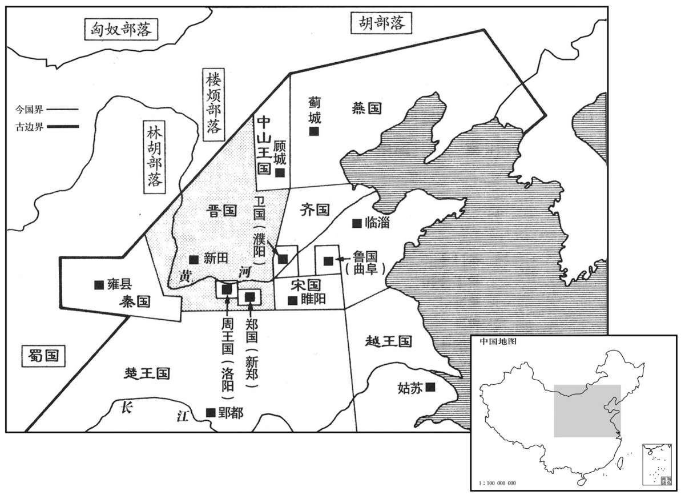
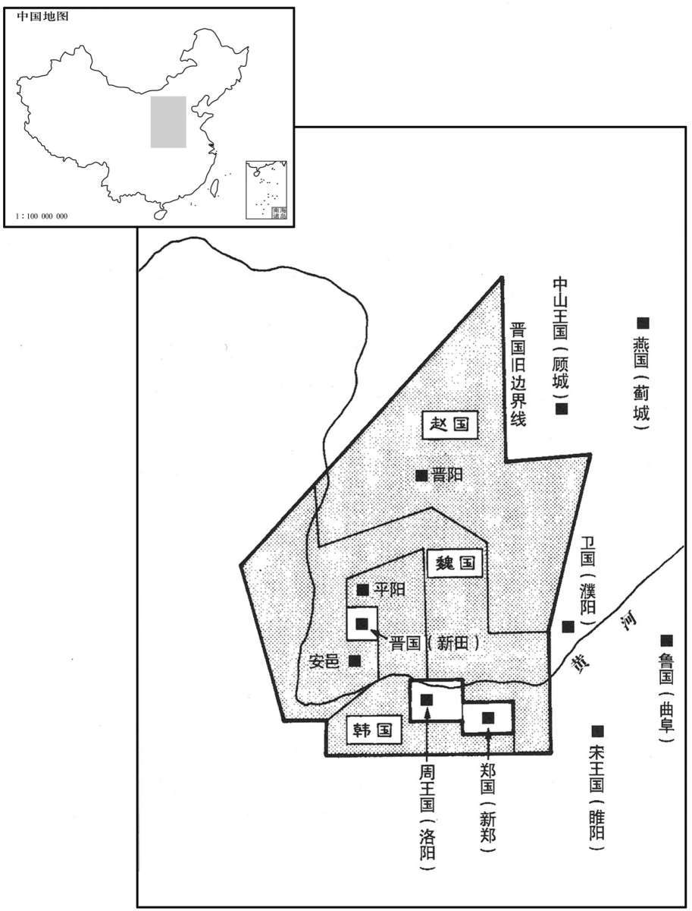
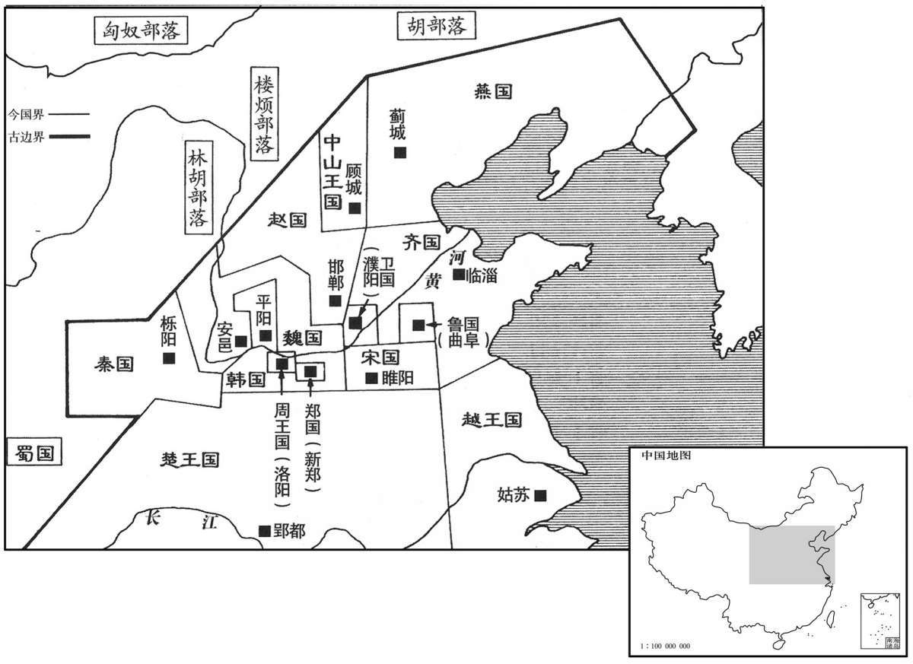
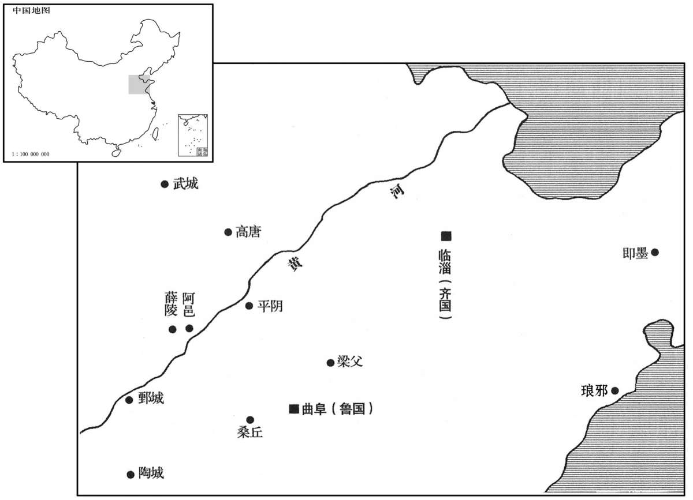

卷次与人物目录 / 卷1
资治通鉴 · 卷第一【周纪一】
公元前403年至公元前369年 · 原文、白话与胡三省注
本页按胡注本编排保存全卷内容。白话采用本站所据译本，未可靠对应的内容另列说明；事件标题用于定位，并非原书文字。
本卷共112段原文，112段有译文对应，0段缺译或待核对。
卷第一【周纪一】起着雍摄提格（戊寅），尽玄黓困敦（壬子），凡三十五年。
卷首原文与注释
〔尔雅：太岁在甲曰阏逢，在乙曰旃蒙，在丙曰柔兆，在丁曰强圉，在戊曰着雍，在己曰屠维，在庚曰上章，在辛曰重光，在壬曰玄黓，在癸曰昭阳，是为岁阳。在寅曰摄提格，在卯曰单阏，在辰曰执徐，在巳曰大荒落，在午曰敦牂，在未曰协洽，在申曰涒滩，在酉曰作噩，在戌曰淹茂，在亥曰大渊献，在子曰困敦，在丑曰赤奋若，是为岁阴。周纪分注“起着雍摄提格”，起戊寅也。“尽玄黓困敦”，尽壬子也。阏，读如字；史记作“焉”，于干翻。着，陈如翻。雍，于容翻。黓，逸职翻。单阏，上音丹，又特连翻；下乌葛翻，又于连翻。牂，作郎翻。涒，吐魂翻。滩，吐丹翻。困敦，音顿。杜预世族谱曰：周，黄帝之苗裔，姬姓。后稷之后，封于邰；及夏衰，稷子不窋窜于西戎。至十二代孙太王，避狄迁岐；至孙文王受命，武王克商而有天下。自武王至平王凡十三世，自平王至威烈王又十八世，自威烈王至赧王又五世。张守节曰：因太王居周原，国号曰周。地理志云：右扶风美阳县岐山西北中水乡，周太王所邑。括地志云：故周城一名美阳城，在雍州武功县西北二十五里。纪，理也，统理众事而系之年月。温公系年用春秋之法，因史、汉本纪而谓之纪。邰，汤来翻。夏，户雅翻。窋，竹律翻。在雍，于用翻。〕
威烈王〔名午，考王之子。谥法：猛以刚果曰威；有功安民曰烈。沈约曰：诸复谥，有谥人，无谥法。〕
公元前403年 · 威烈王在位第23年
二十三年〔（戊寅、前四○三）上距春秋获麟七十八年，距左传赵襄子惎智伯事七十一年。惎，毒也，音其冀翻。〕
本年含晋阳之战等更早事件的追叙与史家评论；编年位置不等于事件发生年份。
初命晋大夫魏斯、赵籍、韩虔为诸侯。〔此温公书法所由始也。魏之先，毕公高后，与周同姓；其苗裔曰毕万，始封于魏，至魏舒，始为晋正卿；三世至斯。赵之先，造父后；至叔带，始自周适晋；至赵夙，始封于耿。至赵盾，始为晋正卿，六世至籍。韩之先，出于周武王，至韩武子事晋，封于韩原。至韩厥，为晋正卿；六世至虔。三家者，世为晋大夫，于周则陪臣也。周室既衰，晋主夏盟，以尊王室，故命之为伯。三卿窃晋之权，暴蔑其君，剖分其国，此王法所必诛也。威烈王不惟不能诛之，又命之为诸侯，是崇奖奸名犯分之臣也，通鉴始于此，其所以谨名分欤！〕
周威烈王姬午初次分封晋国大夫魏斯、赵籍、韩虔为诸侯国君。
本段人物：魏文侯

本年形势与背景参考图

史家评论 · 原文及其白话
臣光曰：臣闻天子之职莫大于礼，礼莫大于分，分莫大于名。〔分，扶问翻；下同。〕何谓礼？纪纲是也。何谓分？君、臣是也。何谓名？公、侯、卿、大夫是也。
臣司马光曰：我知道天子的职责中最重要的是维护礼教，礼教中最重要的是区分地位，区分地位中最重要的是匡正名分。什么是礼教？就是法纪。什么是区分地位？就是君臣有别。什么是名分？就是公、侯、卿、大夫等官爵。
夫以四海之广，〔夫以，音扶。〕兆民之众，受制于一人，虽有绝伦之力，高世之智，莫〔【章：十二行本“莫”下有“敢”字；乙十一行本同；孔本同。】〕不奔走而服役者，岂非以礼为之纪纲〔【章：十二行本，二字互乙；乙十一行本同；孔本同。】〕哉！是故天子统三公，〔统，他综翻。〕三公率诸侯，诸侯制卿大夫，卿大夫治士庶人。〔治，直之翻。〕贵以临贱，贱以承贵。上之使下犹心腹之运手足，根本之制支叶，下之事上犹手足之卫心腹，支叶之庇本根，然后能上下相保而国家治安。〔治，直吏翻。〕故曰天子之职莫大于礼也。
四海之广，亿民之众，都受制于天子一人。尽管是才能超群、智慧绝伦的人，也不能不在天子足下为他奔走服务，这难道不是以礼作为礼纪朝纲的作用吗！所以，天子统率三公，三公督率诸侯国君，诸侯国君节制卿、大夫官员，卿、大夫官员又统治士人百姓。权贵支配贱民，贱民服从权贵。上层指挥下层就好像人的心腹控制四肢行动，树木的根和干支配枝和叶；下层服侍上层就好像人的四肢卫护心腹，树木的枝和叶遮护根和干，这样才能上下层互相保护，从而使国家得到长治久安。所以说，天子的职责没有比维护礼制更重要的了。
文王序易，以干、坤为首。孔子系之曰：“天尊地卑，乾坤定矣。卑高以陈，贵贱位矣。”〔系，户计翻。〕言君臣之位犹天地之不可易也。春秋抑诸侯，尊王〔【章：十二行本“王”作“周”；乙十一行本同；孔本同；退齐校同。】〕室，王人虽微，序于诸侯之上，以是见圣人于君臣之际未尝不惓惓也。〔惓，逵员翻。汉刘向传：忠臣畎亩，犹不忘君惓惓之义也。惓惓，犹言勤勤也。〕非有桀、纣之暴，汤、武之仁，人归之，天命之，君臣之分当守节伏死而已矣。是故以微子而代纣则成汤配天矣，〔史记：商帝乙生三子：长曰微子启，次曰中衍，季曰纣。纣之母为后。帝乙欲立启为太子，太史据法争之曰：“有妻之子，不可立妾之子。”乃立纣。纣卒以暴虐亡殷国。孔〔郑〕玄义曰：物之大者莫若于天；推父比天，与之相配，行孝之大，莫大于此；所谓“严父莫大于配天”也。又孔氏曰：礼记称万物本乎天，人本乎祖。俱为其本，可以相配，故王者皆以祖配天。谥法：除残去虐曰汤。然谥法起于周；盖殷人先有此号，周人遂引以为谥法。分，扶问翻。长，知两翻。卒，子恤翻。〕以季札而君吴则太伯血食矣，〔吴王寿梦有子四人：长曰诸樊，次曰余祭，次曰余昧，次曰季札。季札贤，寿梦欲立之，季札让不可，于是立诸樊。诸樊卒，以授余祭，欲兄弟以次相传，必致国于季札；季札终让而逃之。其后诸樊之子光与余昧之子僚争国，至于夫差，吴遂以亡。宗庙之祭用牲，故曰血食。太伯，吴立国之君。范宁曰：太者，善大之称；伯者，长也。周太王之元子，故曰太伯。陆德明曰：寿梦，莫公翻。余祭，侧介翻。余昧，音末。〕然二子宁亡国而不为者，诚以礼之大节不可乱也。故曰礼莫大于分也。
周文王演绎排列《易经》，以乾、坤为首位。孔子解释说：“天尊贵，地卑微，阳阴于是确定。由低至高排列有序，贵贱也就各得其位。”这是说君主和臣子之间的上下关系就像天和地一样不能互易。《春秋》一书贬低诸侯，尊崇周王室，尽管周王室的官吏地位不高，在书中排列顺序仍在诸侯国君之上，由此可见孔圣人对于君臣关系的关注。如果不是夏桀、商纣那样的暴虐昏君，对手又遇上商汤、周武王这样的仁德明主，使人民归心、上天赐命的话，君臣之间的名分只能是作臣子的恪守臣节，矢死不渝。所以如果商朝立贤明的微子为国君来取代纣王，成汤创立的商朝就可以永配上天；而吴国如果以仁德的季札做君主，开国之君太伯也可以永享祭祀。然而微子、季札二人宁肯国家灭亡也不愿做君主，实在是因为礼教的大节绝不可因此破坏。所以说，礼教中最重要的就是地位高下的区分。
夫礼，辨贵贱，序亲疏，裁群物，制庶事，非名不着，非器不形；名以命之，器以别之，〔夫，音扶。别，彼列翻。〕然后上下粲然有伦，此礼之大经也。名器既亡，则礼安得独在哉！昔仲叔于奚有功于卫，辞邑而请繁缨，孔子以为不如多与之邑。惟名与器，不可以假人，君之所司也；政亡则国家从之。〔左传：卫孙桓子帅师与齐师战于新筑，卫师败绩。新筑人仲叔于奚救孙桓子，桓子是以免。既而卫人赏之邑，辞；请曲县、繁缨以朝，许之。孔子闻之曰：“不如多与之邑，惟名与器不可以假人。”繁缨，马饰也。繁，马鬣上饰；缨，马膺前饰。晋志注曰：缨在马膺如索帬。繁，音蒲官翻。缨，伊盈翻。索，昔各翻。〕卫君待孔子而为政，孔子欲先正名，以为名不正则民无所措手足。〔见论语。〕夫繁缨，小物也，而孔子惜之；正名，细务也，而孔子先之：〔先，悉荐翻。〕诚以名器既乱则上下无以相保故也。夫事未有不生于微而成于着，圣人之虑远，故能谨其微而治之。〔治，直之翻；下同。〕众人之识近，故必待其着而后救之；治其微则用力寡而功多，救其着则竭力而不能及也。易曰：“履霜坚冰至，”〔坤初六爻辞。象曰：“履霜坚冰，阴始凝也。驯致其道，至坚冰也。”〕书曰：“一日二日万几，”〔皋陶谟之辞。孔安国注曰：几，微也。言当戒惧万事之微。几，居依翻。〕谓此类也。故曰分莫大于名也。〔分，扶问翻。〕
所谓礼教，在于分辨贵贱，排比亲疏，裁决万物，处理日常事物。没有一定的名位，就不能显扬；没有器物，就不能表现。只有用名位来分别称呼，用器物来分别标志，然后上下才能井然有序。这就是礼教的根本所在。如果名位、器物都没有了，那么礼教又怎么能单独存在呢！当年仲叔于奚为卫国建立了大功，他谢绝了赏赐的封地，却请求允许他享用贵族才应有的马饰。孔子认为不如多赏赐他一些封地，惟独名位和器物，绝不能假与他人，这是君王的职权象征；处理政事不坚持原则，国家也就会随着走向危亡。卫国国君期待孔子为他崐处理政事，孔子却先要确立名位，认为名位不正则百姓无所是从。马饰，是一种小器物，而孔子却珍惜它的价值；正名位，是一件小事情，而孔子却要先从它做起，就是因为名位、器物一紊乱，国家上下就无法相安互保。没有一件事情不是从微小之处产生而逐渐发展显著的，圣贤考虑久远，所以能够谨慎对待微小的变故及时予以处理；常人见识短浅，所以必等弊端闹大才来设法挽救。矫正初起的小错，用力小而收效大；挽救已明显的大害，往往是竭尽了全力 也不能成功。《易经》说：“行于霜上而知严寒冰冻将至。”《尚书》说：“先王每天都要兢兢业业地处理成千上万件事情。”就是指这类防微杜渐的例子。所以说，区分地位高下最重要的是匡正各个等级的名分。
呜呼！幽、厉失德，周道日衰，纲纪散坏，下陵上替，诸侯专征，〔谓齐桓公，晋文公至悼公以及楚庄王、吴夫差之类。〕大夫擅政，〔谓晋六卿、鲁三家、齐田氏之类。〕礼之大体什丧七八矣，〔丧，息浪翻。〕然文、武之祀犹绵绵相属者，〔属，联属也，音之欲翻。凡联属之属皆同音。〕盖以周之子孙尚能守其名分故也。何以言之？昔晋文公有大功于王室，请隧于襄王，襄王不许，曰：“王章也。未有代德而有二王，亦叔父之所恶也。不然，叔父有地而隧，又何请焉！”文公于是惧而不敢违。〔太叔带之难，襄王出居于泛。晋文公帅师纳王，杀太叔带。既定襄王于郏，王劳之以地，辞；请隧焉，王弗许云云。杜预曰：阙地通路曰隧，此乃王者葬礼也。诸侯皆县柩而下。王章者，章显王者异于诸侯。古者天子谓同姓诸侯为伯父、叔父。隧，音遂。恶，乌路翻。难，乃旦翻。泛，音泛。劳，力到翻。阙，其月翻。县，音玄。柩，其久翻。〕是故以周之地则不大于曹、滕，以周之民则不众于邾、莒，〔曹、滕、邾、莒，春秋时小国。莒，居许翻。〕然历数百年，宗主天下，虽以晋、楚、齐、秦之强不敢加者，何哉？徒以名分尚存故也。至于季氏之于鲁，田常之于齐，白公之于楚，智伯之于晋，〔鲁大夫季氏，自季友以来，世执鲁国之政。季平子逐昭公，季康子逐哀公，然终身北面，不敢篡国。田常，即陈恒。田氏本陈氏；温公避国讳，改“恒”曰“常”。陈成子得齐国之政，杀阚止，弑简公，而亦不敢自立。史记世家以陈敬仲完为田敬仲完，陈成子恒为田常，故通鉴因以为据。白公胜杀楚令尹子西、司马子期，石乞曰：“焚库弑王，不然不济！”白公曰：“弑王不祥，焚库无聚。”智伯当晋之衰，专其国政，侵伐邻国，于晋大夫为最强；攻晋出公，出公道死。智伯欲并晋而不敢，乃奉哀公骄立之。〕其势皆足以逐君而自为，然而卒不敢者，〔卒，子恤翻，终也。〕岂其力不足而心不忍哉，乃畏奸名犯分而天下共诛之也。〔奸，居寒翻，亦犯也。分，扶问翻。〕今晋大夫暴蔑其君，剖分晋国，〔史记六国年表：定王十六年，赵、魏、韩灭智伯，遂三分晋国。〕天子既不能讨，又宠秩之，使列于诸侯，是区区之名分复不能守而并弃之也。〔陆德明经典释文：凡复字，其义训又者，并音扶又翻。〕先王之礼于斯尽矣！
呜呼！周幽王、周厉王丧失君德，周朝的气数每况愈下。礼纪朝纲土崩瓦解；下欺凌、上衰败；诸侯国君恣意征讨他人；士大夫擅自干预朝政；礼教从总体上已经有十之七八沦丧了。然而周文王、周武王开创的政权还能绵绵不断地延续下来，就是因为周王朝的子孙后裔尚能守定名位。为什么这样说呢？当年晋文公为周朝建立了大功，于是向周襄王请求允许他死后享用王室的隧葬礼制，周襄王没有准许，说：“周王制度明显。没有改朝换代而有两个天子，这也是作为叔父辈的晋文公您所反对的。不然的话，叔父您有地，愿意隧葬，又何必请示我呢？”晋文公于是感到畏惧而没有敢违反礼制。因此，周王室的地盘并不比曹国、滕国大，管辖的臣民也不比邾国、莒国多，然而经过几百年，仍然是天下的宗主，即使是晋、楚、齐、秦那样的强国也还不敢凌驾于其上，这是为什么呢？只是由于周王还保有天子的名分。再看看鲁国的大夫季氏、齐国的田常、楚国的白公胜、晋国的智伯，他们的势力都大得足以驱逐国君而自立，然而他们到底不敢这样做，难道是他们力量不足或是于心不忍吗？只不过是害怕奸夺名位僭犯身分而招致天下的讨伐罢了。现在晋国的三家大夫欺凌蔑视国君，瓜分了晋国，作为天子的周王不能派兵征讨，反而对他们加封赐爵，让他们列位于诸侯国君之中，这样做就使周王朝仅有的一点名分不能再守定而全部放弃了。周朝先王的礼教到此丧失干净！
本段人物：智伯
乌呼！君臣之礼既坏矣，〔此坏，其义为成坏之坏，读如字。〕则天下以智力相雄长，〔长，知两翻。〕遂使圣贤之后为诸侯者，社稷无不泯绝，〔谓齐、宋亡于田氏，鲁、陈、越亡于楚，郑亡于韩也。泯，弥忍翻，尽也，又弥邻翻。毛晃曰：没也，灭也。〕生民之类糜灭几尽，〔说文曰：糜，糁也；取糜烂之义，音忙皮翻。几，居依翻，又渠希翻，近也。〕岂不哀哉！
呜呼！君臣之间的礼纪既然崩坏，于是天下便开始以智慧、武力互相争雄，使当年受周先王分封而成为诸侯国君的圣贤后裔，江山相继沦亡，周朝先民的子孙灭亡殆尽，岂不哀伤！
或者以为当是之时，周室微弱，三晋强盛，〔三家分晋国，时因谓之“三晋”，犹后之三秦、三齐也。〕虽欲勿许，其可得乎！是大不然。夫三晋虽强，苟不顾天下之诛而犯义侵礼，则不请于天子而自立矣。不请于天子而自立，则为悖逆之臣，〔夫，音扶。悖，蒲内翻，又蒲没翻。〕天下苟有桓、文之君，必奉礼义而征之。今请于天子而天子许之，是受天子之命而为诸侯也，谁得而讨之！故三晋之列于诸侯，非三晋之坏礼，乃天子自坏之也。〔坏，音怪，人毁之也。〕
有人认为当时周王室已经衰微，而晋国三家力量强盛，就算周王不想承认他们，又怎么能做得到呢！这种说法是完全错误的。晋国三家虽然强悍，但他们如果打算不顾天下的指责而公然侵犯礼义的话，就不会来请求周天子的批准，而是去自立为君了。不向天子请封而自立为国君，那就是叛逆之臣，天下如果有像齐桓公、晋文公那样的贤德诸侯，一定会尊奉礼义对他们进行征讨。现在晋国三家向天子请封，天子又批准了。他们就是奉天子命令而成为诸侯的，谁又能对他们加以讨伐呢！所以晋国三家大夫成为诸侯，并不是晋国三家破坏了礼教，正是周天子自已破坏了周朝的礼教啊！
初，智宣子将以瑶为后，智果曰：“不如宵也。〔韦昭曰：智宣子，晋卿荀跞之子申也，瑶，宣子之子智伯也，谥曰襄子。智果，智氏之族也。宵，宣子之庶子也。按谥法：圣善周闻曰宣。智氏溢美也。〕瑶之贤于人者五，其不逮者一也。〔韦昭曰：不仁也。〕美鬓长大则贤，〔通鉴俗传写者多作“美须”，非也。国语作“美鬓”，今从之。〔【章：十二行本正作“鬓”；孔本同。乙十一行本作“须”。】〕射御足力则贤，，伎艺毕给则贤，巧文辩惠则贤，〔韦昭曰：给，足也。巧文，行巧于文辞。伎，渠绮翻。〕强毅果敢则贤；如是而甚不仁。夫以其五贤陵人而以不仁之，其谁能待之？〔韦昭曰：待，犹假也。〕若果立瑶也，智宗必灭。”弗听。智果别族于太史，为辅氏。〔此事见国语。按左传哀公二十三年，晋荀瑶伐齐，始见于传。哀二十三年，史记元王五年也。荀跞，智文子也。定十四年，智文子犹见于传。智宣子之事，传无所考。立瑶之议，当在元王五年之前。韦昭曰：太史掌氏姓，周礼春官之属；小史掌定世系，辨昭穆。郑司农注云：史官主书，故韩宣子聘鲁，观书于太史。世系谓帝系、世本之属是也；小史主定之。贾公彦疏曰，注引太史证之者，太史史官之长，共其事故也。盖周之制，小史定姓氏，其书则太史掌之。智果欲避智氏之祸，故于太史别族。宋祁国语补音：别，彼列翻；又如字。〕
当初，晋国的智宣子想以智瑶为继承人，族人智果说：“他不如智宵。智瑶有超越他人的五项长处，只有一项短处。美发高大是长处，精于骑射是长处，才艺双全是长处，能写善辩是长处，坚毅果敢是长处。虽然如此却很不仁厚。如果他以五项长处来制服别人而做不仁不义的恶事，谁能和他和睦相处？要是真的立智瑶为继承人，那么智氏宗族一定灭亡。”智宣子置之不理。智果便向太史请求脱离智族姓氏，另立为辅氏。
本段人物：智伯
赵简子之子，长曰伯鲁，幼曰无恤。〔赵简子，文子之孙鞅也。谥法：一德不懈曰简。白虎通曰：子，孳也，孳孳无已也。赵岐曰：子者，男子之通称也。长，知两翻。〕将置后，不知所立，乃书训戒之辞于二简，〔孔颖达曰：书者，舒也。书纬璇玑钤云：书者，如也。则书者，写其言如其意，得展舒也。世本曰：沮诵、苍颉作书。释文〔名〕曰：书，庶也，纪庶物也；亦言着也，着之简纸，求不灭也。简，竹策也。〕以授二子曰：“谨识之！”〔识，职吏翻，记也。〕三年而问之，伯鲁不能举其辞；求其简，已失之矣。问无恤，诵其辞甚习；〔习，熟也。〕求其简，出诸袖中而奏之。〔毛晃曰：奏，进上也。〕于是简子以无恤为贤，立以为后。
赵国的大夫赵简子的儿子，长子叫伯鲁，幼子叫无恤。赵简子想确定继承人，不知立哪位好，于是把他的日常训诫言词写在两块竹简上，分别交给两个儿子，嘱咐说：“好好记住！”过了三年，赵简子问起两个儿子，大儿子伯鲁说不出竹简上的话；再问他的竹简，已丢失了。又问小儿子无恤，竟然背诵竹简训词很熟习；追问竹简，他便从袖子中取出献上。于是，赵简子认为无恤十分贤德，便立他为继承人。
本段人物：赵襄子
简子使尹铎为晋阳，〔姓谱：尹，少昊之子，封于尹城，子孙因为氏。韦昭曰：晋阳，赵氏邑。为，治也。班志曰：晋阳，故诗唐国。周成王灭唐，封弟叔虞。龙山在西，晋水所出，东入汾。臣瓒曰：所谓唐，今河东永安县是也，去晋四百里。括地志曰：晋阳故城，今名晋城，在蒲州虞乡县西。今按水经注：晋水出晋阳县西龙山。昔智伯遏晋水以灌晋阳，其水分为二流，北渎即智氏故渠也。同过水出沾县北山，西过榆次县南，又西到晋阳县南。榆次县南水侧有凿台，战国策所谓“智伯死于凿台之下”，即此处也。参而考之，晋阳故城恐不在蒲州。水经注又云：叔虞封于唐，县有晋水，故改名为晋。子夏序诗，“此晋也而谓之唐”，是也，与班志合。瓒说及括地志未知何据。〕请曰：“以为茧丝乎？抑为保障乎？”简子曰：“保障哉！”〔茧丝，谓浚民之膏泽，如抽茧之绪，不尽则不止。保障，谓厚民之生，如筑堡以自障，愈培则愈厚。宋祁曰：障，之亮翻，又音章。〕尹铎损其户数。〔韦昭曰：损其户，则民优而税少。〕简子谓无恤曰：“晋国有难，而无以尹铎为少，〔而，汝也。难，乃旦翻，患也，厄也。少，音多少之少。重之为多，轻之为少。〕无以晋阳为远，必以为归。”
赵简子派尹铎去晋阳，临行前尹铎请示说：“您是打算让我去抽丝剥茧般地搜刮财富呢，还是作为保障之地？”赵简子说：“作为保障。”尹铎便少算居民户数，减轻赋税。赵简子又对儿子赵无恤说：“一旦晋国发生危难，你不要嫌尹铎地位不高，不要怕晋阳路途遥远，一定要以那里作为归宿。”
本段人物：赵襄子
及智宣子卒，〔卒，子恤翻。〕智襄子为政，〔谥法：有劳定国曰襄。为政，为晋国之政。〕与韩康子、魏桓子宴于蓝台。〔韩康子，韩宣子之曾孙庄子之子虔〔虎〕也。魏桓子，魏献子之子曼多之孙驹也。谥法：温柔好乐曰康；辟土服远曰桓。尔雅：四方而高曰台。〕智伯戏康子而侮段规。〔姓谱：段，郑共叔段之后。〕智国闻之，谏曰：“主不备难，〔【章：十二行本无“难”字；乙十一行本同。】〕难必至矣！”〔春秋以来，大夫之家臣谓大夫曰主。难，乃旦翻；下同。〕智伯曰：“难将由我。我不为难，谁敢兴之！”对曰：“不然。夏书有之：『一人三失，怨岂在明，不见是图。』〔书五子之歌之辞。夏，户雅翻。见，贤遍翻，发见也，着也，形也。〕夫君子能勤小物，故无大患。今主一宴而耻人之君相，〔夫，音扶。段规，韩康子之相也。相，息酱翻；下同。〕又弗备：曰『不敢兴难』，无乃不可乎！蚋、蚁、蜂、虿，皆能害人，〔宋祁曰：蚋，如锐翻；又字林：人劣翻。秦人谓蚊为蚋。今按：蚋，小虫，日中群集人之肌肤而嘬其血，蚊之类也。蜂，细腰而能螫人。虿亦毒虫，长尾，音丑迈翻。〕况君相乎！”弗听。
等到智宣子去世，智襄子智瑶当政，他与韩康子、魏桓子在蓝台饮宴，席间智瑶戏弄韩康子，又侮辱他的家相段规。智瑶的家臣智国听说此事，就告诫说：“主公您不提防招来灾祸，灾祸就一定会来了！”智瑶说：“人的生死灾祸都取决于我。我不给他们降临灾祸，谁还敢兴风作浪！”智国又说：“这话可不妥。《夏书》中说：‘一个人屡次三番犯错误，结下的仇怨岂能在明处，应该在它没有表现时就提防。’贤德的人能够谨慎地处理小事，所以不会招致大祸。现在主公一次宴会就开罪了人家的主君和臣相，又不戒备，说：‘不敢兴风作浪。’这种态度恐怕不行吧。蚊子、蚂蚁、蜜蜂、蝎子，都能害人，何况是国君、国相呢！”智瑶不听。
本段人物：智伯
智伯请地于韩康子，康子欲弗与。段规曰：“智伯好利而愎，不与，将伐我；不如与之。彼狃于得地，〔好，呼到翻。愎，弼力翻，狠也。狃，女九翻，骄，忲也，又相狎也。〕必请于他人；他人不与，必向之以兵，然后〔【章：十二行本，“后”作“则”；乙十一行本同。】〕我得免于患而待事之变矣。”康子曰：“善”使使者致万家之邑于智伯。〔毛晃曰：邑，都邑。四井为邑，四邑为丘；邑方二里，丘方四里。载师以公邑之田任甸地，以家邑之田任稍地。注：公邑，谓六遂余地。家邑，大夫之采地。此又与四井之邑不同。又都，国都；邑，县也。左传：凡邑有先君宗庙之主曰都，无曰邑。邑曰筑，都曰城。此谓大县邑也。杜预引周礼“四县为都，四井为邑”，恐误。四井之邑方二里，岂能容宗庙城郭！如论语“十室之邑”，西都赋“都都相望，邑邑相属”，则是四县四井之都邑也。若千室之邑、万家之邑，则非井邑矣。项安世曰：小司徒井牧田野，以四井为邑，凡三十六家；除公田四夫，凡三十二家；遂大夫会为邑者之政，以里为邑，凡二十五家。遂大夫盖论里井之制，二十五家共一里门，即六乡之二十五家为一闾也；小司徒盖论沟洫之制，四井为邑，共享一沟，即匠人所谓“井间广四尺深四尺谓之沟”也。居则度人之众寡，沟则度水之众寡，此其所以异欤！毛、项二说皆明周制，参而考之，战国之所谓邑非周制矣。致，送至也。〕智伯悦。又求地于魏桓子，桓子欲弗与。任章曰：“何故弗与？”〔任章，魏桓子之相也。姓谱：黄帝二十五子，十二人各以德为姓，第一曰任氏。又任为风姓之国，实太昊之后，主济祀，今济州任城即其地。任，市林翻。〕桓子曰：“无故索地，故弗与。”任章曰：“无故索地，诸大夫必惧；〔索，山客翻，求也〕，吾与之地，智伯必骄。彼骄而轻敌，此惧而相亲。以相亲之兵待轻敌之人，智氏之命必不长矣。周书曰：『将欲败之，必姑辅之。将欲取之，必姑与之。』〔逸书也。败，补迈翻。〕主不如与之，以骄智伯，然后可以择交而图智氏矣，奈何独以吾为智氏质乎！”〔质，脂利翻，物相缀当也。又质读如字，亦通。质，谓椹质也，质的也。椹质受斧，质的受矢。言智伯怒魏桓子，必加兵于魏，如椹质之受斧，质的之受矢也。〕桓子曰：“善。”复与之万家之邑一。〔复，扶又翻。〕
智瑶向韩康子要地，韩康子想不给。段规说：“智瑶贪财好利，又刚愎自用，如果不给，一定讨伐我们，不如姑且给他。他拿到地更加狂妄，一定又会向别人索要；别人不给，他必定向人动武用兵，这样我们就可以免于祸患而伺机行动了。”韩康子说：“好主意。”便派了使臣去送上有万户居民的领地。智瑶大喜，果然又向魏桓子提出索地要求，魏桓子想不给。家相任章问：“为崐什么不给呢？”魏桓子说：“无缘无故来要地，所以不给。”任章说：“智瑶无缘无故强索他人领地，一定会引起其他大夫官员的警惧；我们给智瑶地，他一定会骄傲。他骄傲而轻敌，我们警惧而互相亲善；用精诚团结之兵来对付狂妄轻敌的智瑶，智家的命运一定不会长久了。《周书》说：‘要打败敌人，必须暂时听从他；要夺取敌人利益，必须先给他一些好处。’主公不如先答应智瑶的要求，让他骄傲自大，然后我们可以选择盟友共同图谋，又何必单独以我们作智瑶的靶子呢！”魏桓子说：“对。”也交给智瑶一个有万户的封地。
本段人物：智伯
智伯又求蔡、皋狼之地于赵襄子，〔康曰：皋，姑劳切；狼，卢当切；春秋蔡地，后为赵邑。余据春秋之时，晋、楚争盟，晋不能越郑而服蔡。三家分晋，韩得成皋，因以并郑，时蔡已为楚所灭，郑之南境亦入于楚，就使皋狼为蔡地，赵襄子安得而有之！汉书地理志西河郡有皋狼县，又有蔺县。汉之西河，春秋以来皆为晋境，而古文“蔺”字与“蔡”字近，或者“蔡”字其“蔺”字之讹也。〕襄子弗与。智伯怒，帅韩、魏之甲以攻赵氏。〔帅，读曰率。〕襄子将出，曰：“吾何走乎？”〔走，则豆翻，疾趋之也。趋，七喻翻。〕从者曰：“长子近，且城厚完。”〔从，才用翻。长子县，周史辛伯所封邑。班志属上党郡。陆德明曰：长子之长，丁丈翻。颜师古曰：长，读为短长之长；今读为长幼之长，非也。崔豹古今注曰：城，盛也，所以盛受民物也。淮南子曰：鲧作城。盛，时征翻。〕襄子曰：“民罢力以完之，〔罢，读曰疲。〕又毙死以守之，其谁与我！”〔韦昭曰：谓谁与我同力也。〕从者曰：“邯郸之仓库实。”〔邯郸，即春秋邯郸午之邑也。班志，邯郸县属赵国。张晏曰：邯郸山在东城下。单，尽也。城郭从邑，故旁加邑。宋白曰：邯郸本卫地，后属晋；七国时为赵都，赵敬侯自晋阳始都邯郸。余按史记六国年表，周安王之十六年，赵敬侯之元年；烈王之二年，赵成侯之元年。成侯二十二年，魏克邯郸，是年显王之十六年也。二十四年，魏归邯郸。若敬侯已都邯郸，魏克其国都而赵不亡，何也？至显王二十二年，公子范袭邯郸，不胜而死，是年肃侯之三年也。意此时赵方都邯郸，盖肃侯徙都，非敬侯也。邯，音寒。郸，音丹，康多寒切。〕襄子曰：“浚民之膏泽以实之，〔韦昭曰：浚，煎也，读曰醮。宋祁曰：浚，苏俊翻；醮，子召翻；余谓浚读当如宋音。浚者，疏瀹也，淘也，深也。〕又因而杀之，其谁与我！其晋阳乎，先主之所属也，〔古者诸侯之大夫，其家之臣子皆称之曰主，死则曰先主，考左传可见已。属，陟玉翻。〕尹铎之所宽也，民必和矣。”乃走晋阳。
智瑶又向赵襄子要蔡和皋狼的地方。赵襄子拒绝不给。智瑶勃然大怒，率领韩、魏两家甲兵前去攻打赵家。赵襄子准备出逃。问：“我到哪里去呢？”随从说：“长子城最近，而且城墙坚厚又完整。”赵襄子说：“百姓精疲力尽地修完城墙，又要他们舍生入死地为我守城，谁能和我同心？”随从又说：“邯郸城里仓库充实。”赵襄子说：“搜刮民脂民膏才使仓库充实，现在又因战争让他们送命，谁会和我同心。还是投奔晋阳吧，那是先主的地盘，尹铎又待百姓宽厚，人民一定能同我们和衷共济。”于是前往晋阳。
三家以国人围而灌之，城不浸者三版；〔高二尺为一版；三版，六尺。〕沈灶产鼁，民无叛意。〔沈，持林翻。颜师古汉书音义曰，鼃，黾也，似虾蟆而长脚，其色青。史游急就章曰：蛙，虾蟆。陆佃埤雅曰；鼁，似虾蟆而长踦，瞋目如怒。鼁，与蛙同，音下娲翻。〕智伯行水，〔据经典释文，凡巡行之行，音下孟翻；后仿此。〕魏桓子御，韩康子骖乘。〔兵车，尊者居左，执弓矢；御者居中；有力者居右，持矛以备倾侧，所谓车右是也。韩、魏畏智氏之强，一为之御，一为之右。骖，与参同，参者，三也。三人同车则曰骖乘，四人同车则曰驷乘。左传：齐伐晋，烛庸之越驷乘。杜预注曰：四人共乘者殿车。乘，石证翻。〕智伯曰：“吾乃今知水可以亡人国也。”桓子肘康子：康子履桓子之跗，以汾水可以灌安邑，绛水可以灌平阳也。〔跗，音夫，足趾也。班志：汾水出汾阳北山。汾阳县属太原郡，安邑县属河东郡。史记正义曰：安邑故城在绛州夏县东北十五里。应劭曰：绛水出河东绛县西南。平阳县亦属河东郡。安邑，魏绛始居邑。平阳，韩武子玄孙贞子始居之。桓、康二子之肘足接，盖各为都邑虑也。水经注曰：绛水出绛县西南，盖以故绛为言，其水出绛山东，西北流而合于浍，犹在绛县界中。智伯所谓“汾水可以灌安邑”，或亦有之；“绛水可以灌平阳”，未识所由。余谓自春秋之季至于元魏，历年滋多，郡县之离合，川谷之迁改，有不可以一时所睹为据者。史记正义曰：韩初都平阳，今晋州也。括地志曰：绛水一名白，今名沸泉，源出绛山，飞泉奋涌，扬波注县，积壑三十余丈，望之极为奇观，可接引北灌平阳城。郦道元父范，历仕三齐，少长齐地，熟其山川，后入关死于道，未尝至河东也。此盖因耳学而致疑。括地志成于唐之魏王泰，泰者，太宗之爱子，罗致天下一时名儒以作此书，其考据宜详，当取以为据。〕絺疵谓智伯曰：“韩、魏必反矣。”智伯曰：“子何以知之？”絺疵曰：“以人事知之。夫从韩、魏之兵以攻赵，赵亡，难必及韩、魏矣。〔夫，音扶。难，乃旦翻。〕今约胜赵而三分其地，城不没者三版，人马相食，城降有日，而二子无喜志，有忧色，是非反而何？”明日，智伯以絺疵之言告二子，二子曰：“此夫谗人欲为赵氏游说，使主疑于二家而懈于攻赵氏也。不然，夫二家岂不利朝夕分赵氏之田，而欲为危难不可成之事乎！”二子出，絺疵入曰：“主何以臣之言告二子也？”智伯曰：“子何以知之？”对曰：“臣见其视臣端而趋疾，知臣得其情故也。”智伯不悛．絺疵请使于齐。〔夫，音扶；余并同。难，乃旦翻。降，户江翻，下也，服也。说，输芮翻。懈，居隘翻，怠也。危难，如字。悛，丑缘翻，改也，止也。絺，抽迟翻，姓也。康曰：“絺”当作“郗”，姓谱诸书未有从丝者，疑借字。余按姓谱：絺姓，周苏忿生支子，封于絺，因氏焉。为赵之为，音于伪翻。使，疏吏翻。疵请出使以避祸也。〕
智瑶、韩康子、魏桓子三家围住晋阳，引水灌城。城墙头只差三版的地方没有被淹没，锅灶都被泡塌，青蛙孳生，人民仍是没有背叛之意。智瑶巡视水势，魏桓子为他驾车，韩康子站在右边护卫。智瑶说：“我今天才知道水可以让人亡国。”魏桓子用胳膊肘碰了一下韩康子，韩康子也踩了一下魏桓子脚。因为汾水可以灌魏国都城安邑，绛水也可以灌韩国都城平阳。智家的谋士疵对智瑶说：“韩、魏两家肯定会反叛。”智瑶问：“你何以知道？”疵说：“以人之常情而论。我们调集韩、魏两家的军队来围攻赵家，赵家覆亡，下次灾难一定是连及韩、魏两家了。现在我们约定灭掉赵家后三家分割其地，晋阳城仅差三版就被水淹没，城内宰马为食，破城已是指日可待。然而韩康子、魏桓子两人没有高兴的心情，反倒面有忧色，这不是必反又是什么？”第二天，智瑶把疵的话告诉了韩、魏二人，二人说：“这一定是离间小人想为赵家游说，让主公您怀疑我们韩、魏两家而放松对赵家的进攻。不然的话，我们两家岂不是放着早晚就分到手的赵家田土不要，而要去干那危险必不可成的事吗？”两人出去，疵进来说：“主公为什么把臣下我的话告诉他们两人呢？”智瑶惊奇地反问：“你怎么知道的？”回答说：“我见他们认真看我而匆忙离去，因为他们知道我看穿了他们的心思。”智瑶不改。于是疵请求让他出使齐国。
本段人物：智伯
赵襄子使张孟谈潜出见二子，曰：“臣闻唇亡则齿寒。今智伯帅韩、魏以攻赵，赵亡则韩、魏为之次矣。”〔帅，读曰率。〕二子曰：“我心知其然也；恐事未遂而谋泄，则祸立至矣。”张孟谈曰：“谋出二主之口，入臣之耳，何伤也！”二子乃潜与张孟谈约，为之期日而遣之。〔姓谱：张氏本自轩辕第五子挥，始造弦，寔张网罗，世掌其职，后因氏焉。风俗传云：张、王、李、赵，黄帝所赐姓也。又晋有解张，字张侯，自此晋国有张氏。唐姓氏谱：张氏出自姬姓，黄帝子少昊青阳氏第五子挥正始制弓矢，子孙赐姓张。周宣王卿士张仲，其后裔事晋为大夫。〕襄子夜使人杀守堤之吏，而决水灌智伯军。智伯军救水而乱，韩、魏翼而击之，襄子将卒犯其前，〔将，即亮翻，又音如字。将，领也。卒，臧没翻。说文：吏人给事者衣为卒，卒衣有题识；其字从“衣”从“十”。〕大败智伯之众，〔以此败彼曰败。败，比迈翻。〕遂杀智伯，尽灭智氏之族。〔史记六国年表，三晋灭智氏在周定王十六年，上距获麟二十七年。皇甫谧曰：元王十一年癸未，三晋灭智伯。〕唯辅果在。〔以别族也。〕
赵襄子派张孟谈秘密出城来见韩、魏二人，说：“我听说唇亡齿寒。现在智瑶率领韩、魏两家来围攻赵家，赵家灭亡就该轮到韩、魏了。”韩康子、魏崐桓子也说：“我们心里也知道会这样，只怕事情还未办好而计谋先泄露出去，就会马上大祸临头。”张孟谈又说：“计谋出自二位主公之口，进入我一人耳朵，有何伤害呢？”于是两人秘密地与张孟谈商议，约好起事日期后送他回城了。夜里，赵襄子派人杀掉智军守堤官吏，使大水决口反灌智瑶军营。智瑶军队为救水淹而大乱，韩、魏两家军队乘机从两翼夹击，赵襄子率士兵从正面迎头痛击，大败智家军，于是杀死智瑶，又将智家族人尽行诛灭。只有辅果得以幸免。
史家评论 · 原文及其白话
臣光曰：智伯之亡也，才胜德也。夫才与德异，而世俗莫之能辨，〔夫，音扶。〕通谓之贤，此其所以失人也。夫聪察强毅之谓才，正直中和之谓德。才者，德之资也，德者，才之帅也。〔夫，音扶。帅，所类翻。〕云梦之竹，天下之劲也；〔书禹贡：云土梦作乂。孔安国注云：云梦之泽在江南。左传：楚王以郑伯田江南之梦。杜预注云：楚之云梦跨江南北。班志：云梦泽在南郡华容县南。祝穆曰：据左传郧夫人弃子文于梦中，言梦而不言云，楚子避吴入于云中，言云而不言梦，则知云、梦二泽也。汉阳志：云在江之北，梦在江之南。又安陆有云梦泽，枝江有云梦城。盖古之云梦泽甚广，而后世悉为邑居聚落，故地之以云梦得名者非一处。竹箭之产，荆楚为良；云梦，楚之地也。梦，如字，又莫公翻。〕然而不矫揉，不羽括，则不能以入坚。〔矫，举夭翻。揉，如久翻。康曰：揉曲为矫，揉所以桡曲而使之直也。羽者，箭翎。括者，箭窟受弦处。括，音聒，通作“筈”。〕棠溪之金，天下之利也；〔左传：楚封吴夫概王于棠溪。战国之时，其地属韩，出金甚精利。刘昭郡国志：汝南郡吴房县有棠溪亭。杜佑通典曰：棠溪在今汝州郾城县界。九域志：蔡州有冶炉城，韩国铸剑之地。〕然而不镕范，不砥砺，则不能以击强。〔毛晃曰：镕，销也，铸也；说文：铸器法也。董仲舒传：犹金在镕。注：镕，谓铸器之模范。范，法也，式也。礼运：范金合土。土。砥，轸氏翻，柔石也。砺，力制翻，也。〕是故才德全尽谓之“圣人”，才德兼亡谓之“愚人”；德胜才谓之“君子”，才胜德谓之“小人”。凡取人之术，苟不得圣人、君子而与之，与其得小人，不若得愚人。何则？君子挟才以为善，小人挟才以为恶。挟才以为善者，善无不至矣；挟才以为恶者，恶亦无不至矣。〔挟，檄颊翻。〕愚者虽欲为不善，智不能周，力不能胜，譬如乳狗搏人，人得而制之。〔挟，户颊翻。朱元晦曰：挟者，兼有而恃之之称。胜，音升。乳，儒遇翻，乳育也。乳狗，育子之狗也。搏，伯各翻。〕小人智足以遂其奸，勇足以决其暴，是虎而翼者也，其为害岂不多哉！〔虎而傅翼，其为害也愈甚。〕夫德者人之所严，〔严，敬也。〕而才者人之所爱；爱者易亲，严者易疏，〔易，以豉翻。〕是以察者多蔽于才而遗于德。自古昔以来，国之乱臣，家之败子，才有余而德不足，以至于颠覆者多矣，岂特智伯哉！故为国为家者苟能审于才德之分而知所先后，〔先，悉荐翻。后，户遘翻。〕又何失人之足患哉！
臣司马光曰：智瑶的灭亡，在于才胜过德。才与德是不同的两回事，而世俗之人往往分不清，一概而论之曰贤明，于是就看错了人。所谓才，是指聪明、明察、坚强、果毅；所谓德，是指正直、公道、平和待人。才，是德的辅助；德，是才的统帅。云梦地方的竹子，天下都称为刚劲，然而如果不矫正其曲，不配上羽毛，就不能作为利箭穿透坚物。棠地方出产的铜材，天下都称为精利，然而如果不经熔烧铸造，不锻打出锋，就不能作为兵器击穿硬甲。所以，德才兼备称之为圣人；无德无才称之为愚人；德胜过才称之为君子；才胜过德称之为小人。挑选人才的方法，如果找不到圣人、君子而委任，与其得到小人，不如得到愚人。原因何在？因为君子持有才干把它用到善事上；而小人持有才干用来作恶。持有才干作善事，能处处行善；而凭借才干作恶，就无恶不作了。愚人尽管想作恶，因为智慧不济，气力不胜任，好像小狗扑人，人还能制服它。而小人既有足够的阴谋诡计来发挥邪恶，又有足够的力量来逞凶施暴，就如恶虎生翼，他的危害难道不大吗！有德的人令人尊敬，有才的人使人喜爱；对喜爱的人容易宠信专任，对尊敬的人容易疏远，所以察选人才者经常被人的才干所蒙蔽而忘记了考察他的品德。自古至今，国家的乱臣奸佞，家族的败家浪子，因为才有余而德不足，导致家国覆亡的多了，又何止智瑶呢！所以治国治家者如果能审察才与德两种不同的标准，知道选择的先后，又何必担心失去人才呢！
本段人物：智伯
三家分智氏之田。赵襄子漆智伯之头，以为饮器。〔说文：桼，木汁可以鬖物，下从水，象桼如水滴而下也。汉书张骞传：匈奴破月氏王，以其头为饮器。韦昭注曰：饮器，椑榼也。晋灼曰：饮器，虎子属也。或曰，饮酒之器也。师古曰：匈奴尝以月氏王头与汉使歃血盟，然则饮酒之器是也。韦云椑榼，晋云虎子，皆非也。椑榼，即今之偏榼，所以盛酒耳，非用饮者也。虎子，亵器，所以溲便者。椑，音鼙。榼，克合翻。氏，音支。使，疏吏翻。歃，色甲翻。盛，时征翻。亵，息列翻。溲，疏鸠翻。便，毗连翻。〕智伯之臣豫让欲为之报仇，〔豫，姓也。让，名也。战国之时又有豫且，不知其同时否也。为，音于伪翻；下同。〕乃诈为刑人，挟匕首，入襄子宫中涂厕。〔挟，持也。刘向曰：匕首，短剑。盐铁论曰：匕首长尺八寸；头类匕，故云匕首。匕，音比。厕，初吏翻，圊也。长，直亮翻。〕襄子如厕心动，索之，获豫让。〔索，山客翻。〕左右欲杀之，襄子曰：“智伯死无后，而此人欲为报仇，真义士也，吾谨避之耳。”乃舍之。〔舍，读曰舍。〕
豫让又漆身为癞，吞炭为哑。〔癞，落盖翻，恶疾也。哑倚下翻，瘖也。〕行乞于市，〔神农日中为市，致天下之民，聚天下之货，交易而退，此立市之始也，郑氏周礼注曰：市，杂聚之处。〕其妻不识也。行见其友，其友识之，为之泣曰：“以子之才，臣事赵孟，必得近幸，〔自春秋之时，赵宜子谓之宣孟，赵文子谓之赵孟，其后遂袭而呼为赵孟。孟，长也。〕子乃为所欲为，顾不易邪？〔易，以豉翻。〕何乃自苦如此？求以报仇，不亦难乎！”豫让曰：〔【章：十二行本“曰”下有“不可”二字；乙十一行本同；孔本同；张校同；退斋校同。】〕“既已委质为臣，〔经典释文曰：质，职日翻。委质，委其体以事君也。后汉书注：委质，屈膝。〕而又求杀之，是二心也。凡吾所为者，极难耳。然所以为此者，将以愧天下后世之为人臣怀二心者也。”襄子出，豫让伏于桥下。襄子至桥，马惊；索之，得豫让，遂杀之。〔自智宣子立瑶，至豫让报仇，其事皆在威烈王二十三年之前，故先以「初」字发之。温公之意，盖以天下莫大于名分，观命三大夫为诸侯之事，则知周之所以益微，七雄之所以益盛；莫重于宗社，观智、赵立后之事，则知智宣子之所以失，赵简子之所以得；君臣之义当守节伏死而已，观豫让之事，则知策名委质者必有霣而无贰。其为后世之鉴，岂不昭昭也哉〕！
赵、韩、魏三家瓜分智家的田土，赵襄子把智瑶的头骨涂上漆，作为饮具。智瑶的家臣豫让想为主公报仇，就化装为罪人，怀揣匕首，混到赵襄子的宫室中打扫厕所。赵襄子上厕所时，忽然心动不安，令人搜索，抓获了豫让。左右随从要将他杀死，赵襄子说：“智瑶已死无后人，而此人还要为他报仇，真是一个义士，我小心躲避他好了。”于是释放豫让。豫让用漆涂身，弄成一个癞疮病人，又吞下火炭，弄哑嗓音。在街市上乞讨，连结发妻子见面也认不出来。路上遇到朋友，朋友认出他，为他垂泪道：“以你的才干，如果投靠赵家，一定会成为亲信，那时你就为所欲为，不是易如反掌吗？何苦自残形体崐以至于此？这样来图谋报仇，不是太困难了吗！”豫让说：“我要是委身于赵家为臣，再去刺杀他，就是怀有二心。我现在这种做法，是极困难的。然而之所以还要这样做，就是为了让天下与后世做人臣子而怀有二心的人感到羞愧。”赵襄子乘车出行，豫让潜伏在桥下。赵襄子到了桥前，马突然受惊，进行搜索，捕获豫让，于是杀死他。
襄子为伯鲁之不立也，有子五人，不肯置后。封伯鲁之子于代，〔代国在夏屋句注之北，赵襄子灭之。班志有代郡代县。为，于伪翻。夏，户雅翻。〕曰代成君，早卒；〔成，谥也。谥法：安民立政曰成。〕立其子浣为赵氏后。〔浣，户管翻。〕襄子卒，弟桓子逐浣而自立；〔史记六国表，威烈王元年，襄子卒；二年，赵桓子元年，卒；明年，国人立献侯浣。“浣”，索隐作“晚”。卒，子恤翻；下同。〕一年卒。赵氏之人曰：“桓子立非襄主意。”乃共杀其子，复迎浣而立之，是为献子。〔复，扶又翻；又音如字。献子，即献侯。六国表：威烈王三年，献侯之元年。盖分晋之后，三晋僭侯久矣。谥法：知质有圣曰献。〕献子生籍，是为烈侯。〔谥法：有功安民曰烈，秉德尊业曰烈。〕
魏斯者，魏桓子之孙也，是为文侯。〔谥法：学勤好问曰文；慈惠安民曰文。〕韩康子生武子；武子生虔，是为景侯。〔谥法；克定祸乱曰武；布义行刚曰景。六国表：威烈王二年，魏文侯斯元年；十八年，韩景侯虔元年。盖其在国僭爵已久，不敢以通王室；威烈王遂因而命之，识者重为周惜。通鉴于此序三家之世也。〕
赵襄子因为赵简子没有立哥哥伯鲁为继承人，自己虽然有五个儿子，也不肯立为继承人。他封赵伯鲁的儿子于代国，称代成君，早逝；又立其子赵浣为赵家的继承人。赵襄子死后，弟弟赵桓子就驱逐赵浣，自立为国君，继位一年也死了。赵家的族人说：“赵桓子做国君本来就不是赵襄子的主意。”大家一起杀死了赵桓子的儿子，再迎回赵浣，拥立为国君，这就是赵献子。赵献子生子名赵籍，就是赵烈侯。魏斯，是魏桓子的孙子，就是魏文侯。韩康子生子名韩武子，武子又生韩虔，被封为韩景侯。
魏文侯以卜子夏、田子方为师。〔卜，以官为氏。田本出于陈，陈敬仲以陈为田氏。徐广曰：始食采地，由是改姓田氏。索隐曰：陈、田二声相近，遂为田氏。夏，户雅翻。〕每过段干木之庐必式。〔过，工禾翻。唐人志氏族曰：李耳，字伯阳，一字聃；其后有李宗，魏封于段，为干木大夫，是以段为氏也。余按：通鉴赧王四十二年，魏有段干子，则段干，复姓也。书：武王式商容闾。注云：式其闾巷，以礼贤。记曲礼：国君抚式，士下之。注云：升车必正立，据式小俛，崇敬也。师古曰：式，车前横木。古者立乘；凡言式车者，谓俛首抚式，以礼敬人。孔颖达曰：式，谓俯下头也。古者车箱长四尺四寸而三分，前一后二，横一木，下去车床三尺三寸，谓之为式；又于式上二尺二寸横一木，谓之较，较去车床凡五尺五寸。于时立乘，若平常则凭较，故诗云“倚重较兮”是也。若应为敬，则落隐下式，而头得俯俛，故记云“式视马尾”是也。较，讫岳翻。〕四方贤士多归之。
魏文侯魏斯以卜子夏、田子方为国师，他每次经过名士段干木的住宅，都要在车上俯首行礼。四方贤才德士很多前来归附他。
本段人物：魏文侯
文侯与群臣饮酒，乐，而天雨，命驾将适野。左右曰：“今日饮酒乐，天又雨，君将安之？”文侯曰：“吾与虞人期猎，虽乐，岂可无一会期哉？”乃往，身自罢之。〔周礼有山虞、泽虞，以掌山泽。注云：虞，度也，度佑山林之大小及其所生。身自罢之者，身往告之，以雨而罢猎也。乐，音洛。〕
魏文侯与群臣饮酒，奏乐间，下起了大雨，魏文侯却下令备车前往山野之中。左右侍臣问：“今天饮酒正乐，外面又下着大雨，国君打算到哪里去呢？”魏文侯说：“我与山野村长约好了去打猎，虽然这里很快乐，也不能不遵守约定！”于是前去，亲自告诉停猎。
本段人物：魏文侯
韩借师于魏以伐赵，文侯曰：“寡人与赵，兄弟也，不敢闻命。”赵借师于魏以伐韩，文侯应之亦然。二国皆怒而去。已而知文侯以讲于己也，〔讲，和也。〕皆朝于魏。〔朝，直遥翻。〕魏于是始大于三晋，诸侯莫能与之争。
韩国邀请魏国出兵攻打赵国。魏文侯说：“我与赵国，是兄弟之邦，不敢从命。”赵国也来向魏国借兵讨伐韩国，魏文侯仍然用同样的理由拒绝了。两国使者都怒气冲冲地离去。后来两国得知魏文侯对自己的和睦态度，都前来朝拜魏国。魏国于是开始成为魏、赵、韩三国之首，各诸侯国都不能和它争雄。
本段人物：魏文侯
使乐羊伐中山，克之；〔乐，姓也。本自有殷微子之后。宋戴公四世孙乐吕为大司寇。中山，春秋之鲜虞也，汉为中山郡。宋白曰：唐定州，春秋白狄鲜虞之地。隋图经曰：中山城在今唐昌县东北三十一里，中山故城是也。杜佑曰：城中有山，故曰中山。〕以封其子击。文侯问于群臣曰：“我何如主？”皆曰：“仁君。”任座曰：“君得中山，不以封君之弟而以封君之子，何谓仁君！”文侯怒，任座趋出。〔任座亦习见当时邻国之事而为是言耳。任音壬，“座”一作“痤”，音才戈翻。〕次问翟璜，〔翟，姓也，音直格翻，又音狄。姓谱：翟为晋所灭，子孙以国为氏。今人多读从上音。璜，户光翻。〕对曰：“仁君。”文侯曰：“何以知之？”对曰：“臣闻君仁则臣直。向者任座之言直，臣是以知之。”文侯悦，使翟璜召任座而反之，亲下堂迎之，以为上客。
魏文侯派乐羊攻打中山国，予以攻克，封给自己的儿子魏击。魏文侯问群臣：“我是什么样的君主？”大家都说：“您是仁德的君主！”只有任座说：“国君您得了中山国，不用来封您的弟弟，却封给自己的儿子，这算什么仁德君主！”魏文侯勃然大怒，任座快步离开。魏文侯又问翟璜，翟璜回答说：“您是仁德君主。”魏文侯问：“你何以知道？”回答说：“臣下我听说国君仁德，他的臣子就敢直言。刚才任座的话很耿直，于是我知道您是仁德君主。”魏文侯大喜，派翟璜去追任座回来，还亲自下殿堂去迎接，奉为上客。
本段人物：魏文侯
文侯与田子方饮，文侯曰：“钟声不比乎？〔比，音毗。不比，言不和也。〕左高。”〔此盖编钟之悬，左高，故其声不和。〕田子方笑。文侯曰：“何笑？”子方曰：“臣闻之，君明乐官，不明乐音，今君审于音，臣恐其聋于官也。”〔明乐官，知其才不才；明乐音，知其和不和。五声合和，然后成音。诗大序曰：声成文，谓之音。〕文侯曰：“善。”
魏文侯与田子方饮酒，文侯说：“编钟的乐声不协调吗？左边高。”田子方笑了，魏文侯问：“你笑什么？”田子方说：“臣下我听说，国君懂得任用乐官，不必懂得乐音。现在国君您精通音乐，我担心您会疏忽了任用官员的职责。”魏文侯说：“对。”
本段人物：魏文侯
子击出，遭田子方于道，下车伏谒。〔古文〔史〕考曰：黄帝作车，引重致远；少昊氏加牛；禹时奚仲加马。释名曰：车，居也。韦昭曰：古唯尺遮翻，自汉以来，始有“居”音。萧子显曰：三皇氏乘祗车出谷口，车之始也。祗，翘移翻。〕子方不为礼。子击怒，谓子方曰：“富贵者骄人乎？贫贱者骄人乎？”子方曰：“亦贫贱者骄人耳，富贵者安敢骄人！国君而骄人则失其国，大夫而骄人则失其家。失其国者未闻有以国待之者也，失其家者未闻有以家待之者也。夫士贫贱者，言不用，行不合则纳履而去耳，安往而不得贫贱哉！”子击乃谢之。〔夫，音扶。行，下孟翻。〕
魏文侯的公子魏击出行，途中遇见国师田子方，下车伏拜行礼。田子方却不作回礼。魏击怒气冲冲地对田子方说：“富贵的人能对人骄傲呢，还是贫贱的人能对人骄傲？”田子方说：“当然是贫贱的人能对人骄傲啦，富贵的人哪里敢对人骄傲呢！国君对人骄傲就将亡国，大夫对人骄傲就将失去采地。失去国家的人，没有听说有以国主对待他的；失去采地的人，也没有听说有以家主对待他的。贫贱的游士呢，话不听，行为不合意，就穿上鞋子告辞了，到哪里得不到贫贱呢！”魏击于是谢罪。
文侯谓李克曰：“先生尝有言曰：『家贫思良妻，国乱思良相。』今所置非成则璜，二子何如？”〔李氏出自颛顼曾孙皋陶，为尧大理，以官命族为理氏。商纣时，裔孙利贞逃难，食木子得全，改为李氏。置，言置相也。相，息亮翻。难，乃旦翻。〕对曰：“卑不谋尊，疏不谋戚。臣在阙门之外，不敢当命。”〔在阙门之外，谓疏远也。〕文侯曰：“先生临事勿让！”克曰：“君弗察故也。居视其所亲，富视其所与，达视其所举，穷视其所不为，贫视其所不取，五者足以定之矣，何待克哉！”文侯曰：“先生就舍，吾之相定矣。”〔相，息亮翻。〕李克出，见翟璜。翟璜曰：“今者闻君召先生而卜相，果谁为之？”克曰：“魏成。”翟璜忿然作色曰：“西河守吴起，臣所进也。〔班志；魏地，其界自高陵以东，尽河东、河内。高陵县，汉属冯翊，其地在河西，所谓“西河之外”者也。魏初使吴起守之，秦兵不敢东向。至惠王时，秦使卫鞅击虏其将公子昂，遂献西河之外于秦。吴，以国为姓。相，息亮翻，守，式又翻。〕君内以邺为忧，臣进西门豹。〔班志，邺县属魏郡。西门豹为邺令，凿渠以利民。王符潜夫论姓氏篇曰：如有东门、西郭、南宫、北郭，皆因居以为姓。西门盖亦此类。邺，鱼怯翻。〕君欲伐中山，臣进乐羊。中山已拔，无使守之，臣进先生。君之子无傅，臣进屈侯鲋。〔傅者，傅之以德义，因以为官名。傅，芳遇翻。屈，九勿翻，姓也。余按屈，晋地，时属魏；鲋盖魏封屈侯也。鲋，音符遇翻。〕以耳目之所睹记，臣何负于魏成！”〔不胜为负。〕李克曰：“子〔【章：十二行本“子”下有“之”字；乙十一行本同；孔本同。】〕言克于子之君者，岂将比周以求大官哉？〔比，毗至翻。阿党为比。〕君问相于克，克之对如是。〔李克自叙其答魏文侯之言也。〕所以知君之必相魏成者，魏成食禄千钟，〔孔颖达曰：禄者，谷也。故郑注司禄云：禄也言榖，年榖丰然后制禄。授神契云：禄者，录也。白虎通曰：上以收录接下，下以名录谨以事上是也。六斛四斗为一钟。〕什九在外，什一在内；是以东得卜子夏、田子方、段干木。〔夏，户雅翻。〕此三人者，君皆师之：子所进五人者，君皆臣之。子恶得与魏成比也！”〔恶，读曰乌，何也。〕翟璜逡巡再拜曰：“璜，鄙人也，失对。愿卒为弟子，”愿卒为子弟！〔逡，七伦翻。逡巡，却退貌。卒，子恤翻，终也。孔颖达曰：先生，师也。谓师为先生者，言彼先己而生，其德多厚也。自称为弟子者，言己自处如弟子，则尊其师如父兄也。〕
魏文侯问李克：“先生曾经说过：‘家贫思良妻，国乱思良相。’现在我选相不是魏成就是翟璜，这两人怎么样？”李克回答说：“下属不参与尊长的事，外人不过问亲戚的事。臣子我在朝外任职，不敢接受命令。”魏文侯说：“先生不要临事推让！”李克说道：“国君您没有仔细观察呀！看人，平时看他所亲近的，富贵时看他所交往的，显赫时看他所推荐的，穷困时看他所不做的，贫贱时看他所不取的。仅此五条，就足以去断定人，又何必要等我指明呢！”魏文侯说：“先生请回府吧，我的国相已经选定了。”李克离去，遇到翟璜。翟璜问：“听说今天国君召您去征求宰相人选，到底定了谁呢？”李克说：“魏成。”翟璜立刻忿忿不平地变了脸色，说：“西河守令吴起，是我推荐的。国君担心内地的邺县，我推荐西门豹。国君想征伐中山国，我推荐乐羊。中山国攻克之后，没有人去镇守，我推荐了先生您。国君的公子没有老师，我推荐了屈侯鲋。凭耳闻目睹的这些事实，我哪点儿比魏成差！”李克说：“你把我介绍给你的国君，难道是为了结党以谋求高官吗？国君问我宰相的人选，我说了刚才那一番话。我所以推断国君肯定会选中魏成为相，是因为魏成享有千钟的傣禄，十分之九都用在外面，只有十分之一留作家用，所以向东得到了卜子夏、田子方、段干木。这三个人，国君都奉他们为老师；而你所举荐的五人，国君都任用为臣属。你怎么能和魏成比呢！”翟璜听罢徘徊不敢进前，一再行礼说：“我翟璜，真是个粗人，失礼了，愿终身为您的弟子！”
吴起者，卫人，仕于鲁。齐人伐鲁，鲁人欲以为将，起取齐女为妻，〔将，即亮翻；下同。取，读曰娶。孔颖达曰：妻之为言齐也；以礼见问，得与夫敌体也。〕鲁人疑之，起杀妻以求将，大破齐师。或谮之鲁侯曰：“起始事曾参，〔世本曰：曾姓出自郐国。陆德明曰：参，所金翻，一音七南翻。〕母死不奔丧，曾参绝之；今又杀妻以求为君将。起，残忍薄行人也！〔行，下孟翻。〕且以鲁国区区而有胜敌之名，则诸侯图鲁矣。”起恐得罪，闻魏文侯贤，乃往归之。文侯问诸李克，李克曰：“起贪而好色；〔死好，呼到翻。〕然用兵，司马穰苴弗能过也。”〔司马，官名。穰苴本齐田姓，仕齐为是官，故以称之；齐景公之贤将也。穰，如羊翻。苴，子余翻。〕于是文侯以为将，击秦，拔五城。
吴起，卫国人，在鲁国任官。齐国攻打鲁国，鲁国想任用吴起为将，但吴起娶的妻子是齐国人，鲁国猜疑吴起。于是，吴起杀死了自己的妻子，求得大将，大破齐国军队。有人在鲁国国君面前攻击他说：“吴起当初曾师事曾参，母亲死了也不回去治丧，曾参与他断绝关系。现在他又杀死妻子来求得您的大将职位。吴起，真是一个残忍缺德的人！况且，以我们小小的鲁国能有战胜齐国的名气，各个国家都要来算计鲁国了。”吴起恐怕鲁国治他的罪，又听说魏文侯贤明，于是就前去投奔。魏文侯征求李克的意见，李克说：“吴起为人贪婪而好色，然而他的用兵之道，连齐国的名将司马穰苴也超不过他。”于是魏文侯崐任命吴起为大将，攻击秦国，攻占五座城。
起之为将，与士卒最下者同衣食，卧不设席，行不骑乘，〔骑马为骑，乘车为乘，言起与士卒同其劳苦，行不用车马也。〕亲裹赢粮，〔师古曰：赢，担也。此言起亲裹士卒所赍担之粮。赢，怡成翻。〕与士卒分劳苦。卒有病疽者，起为吮之。〔疽，七余翻，痈也。吮，徐兖翻；说文：嗽也，康所角切。〕卒母闻而哭之。人曰：“子，卒也，而将军自吮其疽，何哭为？”母曰：“非然也。往年吴公吮其父疽，〔【章：十二行本无“疽”字；乙十一行本同；孔本同。】〕其父战不旋踵，遂死于敌。吴公今又吮其子，妾不知其死所矣，是以哭之。”
吴起做大将，与最下等的士兵同样穿衣吃饭，睡觉不铺席子，行军也不骑马，亲自挑上士兵的粮食，与士兵们分担疾苦。有个士兵患了毒疮，吴起为他吸吮毒汁。士兵的母亲听说后却痛哭。有人奇怪地问：“你的儿子是个士兵，而吴起将军亲自为他吸吮毒疮，你为什么哭？”士兵母亲答道：“不是这样啊！当年吴将军为孩子的父亲吸过毒疮，他父亲作战从不后退，就战死在敌阵中了。吴将军现在又为我儿子吸毒疮，我不知道他该死在哪里了，所以哭他。”
本段人物：吴起
燕愍公薨，子僖公立。〔燕自召公奭受封于北燕，其地则唐幽州蓟县故城是也。自召公至愍公三十二世。燕，因肩翻。愍，读与闵同。谥法：使民悲伤曰闵；小心畏忌曰僖。〕
燕国燕公去世，其子燕僖公即位。
公元前402年 · 威烈王在位第24年
二十四年〔（己卯、前四○二）〕
本年事件索引（现代整理）
王崩，子安王骄立。
周威烈王驾崩，其子姬骄即位，是为周安王。
盗杀楚声王，国人立其子悼王。〔周成王封熊绎于楚，姓芈氏，居丹阳，今枝江县故丹阳城是也。括地志曰：归州秭归县丹阳城，熊绎之始国。其后强大，北封畛于汝，南并吴、越，地方五千里。自熊绎至声王三十世。索隐曰：声王，名当。悼王，名疑。谥法：不生其国曰声。注云：生于外家。年中早夭曰悼。注云：年不称志。又云：恐惧从处曰悼。注云：从处，言险圮也。〕
盗匪杀死楚国楚声王，国中贵族拥立其子楚悼王即位。
原书衔接
安王〔谥法，好和不争曰安。〕
公元前401年 · 安王在位第1年
元年〔（庚辰、前四○一）〕
本年事件索引（现代整理）
秦伐魏，至阳孤。〔周孝王邑非子于秦。徐广曰：今陇西县秦亭是也。括地志曰：秦州清水县本名秦。十三州志曰：秦亭，秦谷是也。至襄公取周地，穆公霸西戎，日以强大。是年，秦简公之十四年也。自非子至简公二十八世。“阳孤”，史记作“阳狐”。【章：乙十一行本正作“狐”。】正义引括地志曰：阳狐郭在魏州元城县东北三十里。余按此时西河之外皆为魏境，若秦兵至元城，则是越魏都安邑而东矣。水经注：河东垣县有阳壶城。九域志：绛州有阳壶城。九域志：绛州有阳壶城识之以广异闻，且俟知者。〕
秦国攻打魏国，直至阳孤。
公元前400年 · 安王在位第2年
二年〔（辛巳、前四○○）〕
本年事件索引（现代整理）
魏、韩、赵伐楚，至桑丘。〔水经注：澺水自葛陂东南迳新蔡县故城东，而东南流注于汝水；又东南迳下桑里，左迤为横塘陂。史记作“乘丘”。正义：地理志，乘丘故城在兖州瑕丘县西北三十五里。当从之。〕
韩国、魏国、赵国联合攻打楚国，直至桑丘。
郑围韩阳翟。〔周宣王封其弟友于郑。杜预世族谱曰：封于咸林，今京兆郑邑是也。幽王无道，友徙其人于虢、郐间，遂有其地，今河南新郑是也。友，谥桓公。是年，郑繻公骀之二十三年。自桓公至繻公二十二世。班志，阳翟县属颍川郡。索隐曰：翟，音狄，温公类篇音苌伯切。繻，询趋翻。骀，堂来翻。〕
郑国围攻韩国阳翟城。
韩景侯薨，子烈侯取立。
韩国韩景侯去世，其子韩取即位，是为韩烈侯。
赵烈侯薨，国人立其弟武侯。
赵国赵烈侯去世，国中贵族拥立其弟即位，是为赵武侯。
秦简公薨，子惠公立。〔谥法：爱民好与曰惠。〕
秦国秦简公去世，其子即位，是为秦惠公。
公元前399年 · 安王在位第3年
三年〔（壬午、前三九九）〕
王子定奔晋。
周朝王子姬定出奔晋国。
虢山崩，壅河。〔徐广曰：虢山在陕。裴骃曰：弘农陕县，故虢国。北虢在大阳，东虢在荥阳。括地志曰：虢山在陜州陕县，西临黄河；今临河有冈阜，似是颓山之余。水经注曰：陜城西北带河，水涌起方数十丈。父老云：石虎载铜翁仲至此沈没，水所以涌。洪河巨渎，宜不为金狄梗流，盖魏文侯时虢山崩壅河所致耳。陕，失冉翻。〕
虢山崩塌，泥石壅塞黄河。
公元前398年 · 安王在位第4年
四年〔（癸未、前三九八）〕
本年事件索引（现代整理）
楚围郑。郑人杀其相驷子阳。〔郑穆公之子騑，字子驷；古者以王父之字为氏，子阳其后也。相，息亮翻。騑，芳菲翻。〕
楚国围攻郑国。郑国人杀死国相驷子阳。
公元前397年 · 安王在位第5年
五年〔（甲申、前三九七）〕
日有食之。〔杜预曰：日行迟，一岁一周天。月行速，一月一周天；一岁凡十二交会。然日、月，动物，虽行度有大量，不能不小有赢缩，故有虽交会而不食者，或有频交而食者。孔颖达曰：日月交会，谓朔也。周天三百六十五度四分度之一。日月皆右行于天，一昼一夜，日行一度，月行十三度十九分度之七，二十九日日有余，而月行天一周，追及于日而与之会。交会而日月同道则食；月或在日道表，或在日道里，则不食矣。又历家为交食之法，大率以一百七十有三日有奇为限。然月先在里，则依限而食者多；若月在表，则依限而食者少。杜预见其参差，乃云“虽行度有大量，不能不小有赢缩，故有虽交会而不食者，或有频交而食者”，此得之矣。苏氏曰：交当朔则日食，然亦有交而不食者。交而食，阳微而阴乘之也；交而不食，阳盛而阴不能揜也。朱元晦曰：此则系乎人事之感。盖臣子背君父，妾妇乘其夫，小人陵君子，夷狄侵中国，所感如是，则阴盛阳微而日为之食矣。是以圣人于春秋，每食必书，而诗人亦以为丑也。〔今此书年而不书月与晦、朔，史失之也。释名曰：日、月亏曰食；稍小侵亏，如虫食草木之叶也。亦作“蚀”。〕
出现日食。
三月，盗杀韩相侠累。侠累与濮阳严仲子有恶。仲子闻轵人聂政之勇，以黄金百溢为政母寿，欲因以报仇。〔相，息亮翻。侠，户颊翻。累，力追翻。濮阳，春秋之帝丘，汉为濮阳县，属东郡。应劭曰：濮水南入巨野。水北为阳。濮，博木翻。恶，如字，不善也；康乌故切，非。轵，春秋原邑，晋文公所围者；汉为轵县，属河内郡；音只。姓谱曰：楚大夫食采于聂，因以为氏。聂，尼辄翻。溢，夷质翻。二十四两为溢。〕政不受，曰：“老母在，政身未敢以许人也！”及母卒，仲子乃使政刺侠累。〔卒，子恤翻。刺，七亦翻，又如字。〕侠累方坐府上，兵卫甚众，聂政直入上阶，〔上，时掌翻。〕刺杀侠累，因自皮面决〔【章：乙十一行本作扶。】〕。眼，自屠出肠。韩人暴其尸于市，〔暴，步木翻，又音如字，露也。〕购问，莫能识。其姊嫈闻而往，哭之曰：“是轵深井里聂政也！〔史记正义曰：深井里在怀州济源县南三十里。〕以妾尚在之故，重自刑以绝从。妾奈何畏殁身之诛，终灭贤弟之名！”遂死于政尸之旁。〔皮面，以刀剺面而去其皮。悬赏以募告者曰购。购，古侯翻。嫈，乌茎翻。绝从之从，读曰踪，谓自绝其踪迹。或曰：从，读如字，谓绝其从坐之罪也。〕
三月，盗匪杀死韩国国相侠累。侠累与濮阳人严仲子有仇，严仲子听说轵地人聂政很勇敢，便拿出一百镒黄金为聂政母亲祝寿，想让聂政为他报仇。聂政却不接受，说：“我的老母亲还健在，我不敢为别人去献身！”等到他的母亲去世，严仲子便派聂政去行刺侠累。侠累正端坐府中，有许多护卫兵丁，聂政一直冲上厅阶，把侠累刺死。然后划破自己的面皮，挖出双眼，割出肚肠而死。韩国人把聂政的尸体放在集市中暴尸。并悬赏查找，但无人知晓。聂政的姐姐聂听说此事前往，哭着说：“这是轵地深井里的聂政啊！他因为我还在，就自毁面容不使连累。我怎么能怕杀身之祸，最终埋没我弟弟的英名呢！”于是自尽死在聂政的尸体旁边。
公元前396年 · 安王在位第6年
六年〔（乙酉、前三九六）〕
郑驷子阳之党弑繻公，〔繻者，谥法所不载。史记注：“繻”，或作“缭”。繻，询趋翻。〕而立其弟乙，〔白虎通曰：弟，悌也，心顺、行笃也。行，下孟翻。〕是为康公。
郑国宰相驷子阳的余党杀死国君郑公，改立他的弟弟姬乙，是为郑康公。
宋悼公薨，子休公田立。〔武王封微子启于宋，唐宋州之脽阳县是也。自微子二十七世至悼公，名购由。休，亦谥法所不载。〕
宋国宋悼公去世，其子宋田即位，是为宋休公。
公元前395年 · 安王在位第7年
胡注本未在本卷单列这一年记事；不能据此认为当年没有历史事件。
公元前394年 · 安王在位第8年
八年〔（丁亥、前三九四）〕
本年事件索引（现代整理）
齐伐鲁，取最。〔【章：十二行本“最”下有“韩救鲁”三字；乙十一行本同；孔本同；张校同；退斋校同。】〕〔武王封太公于齐，唐青州之临淄是也。括地志曰：天齐水在临淄东南十五里。封禅书曰：齐之所以为齐者，以天齐。是年，康公贷之十一年。自太公至康公二十九世。成王封伯禽于鲁，唐兖州之曲阜是也。是年，穆公之十六年。自伯禽至穆公凡二十八世。〕
齐国攻打鲁国，攻占最地。
郑负黍叛，复归韩。〔据史记，繻公之十六年，败韩于负黍，盖以此时取之，而今复叛归韩也。刘昭郡国志：颖川郡阳城县有负黍聚。古今地名云；负黍山在阳城县西南二十七里，或云在西南三十五里。〕
郑国的负黍地方反叛，复归顺韩国。
公元前393年 · 安王在位第9年
九年〔（戊子、前三九三）〕
魏伐郑。
魏国攻打郑国。
晋烈公薨，子孝公倾立。〔周成王封弟叔虞于唐。括地志曰：故唐城在并州晋阳县北二里，尧所筑也。都城记曰：唐叔虞之子燮父徙居晋水旁，今并州理故唐城，即燮父初徙之处；其城南半入州城中。毛诗谱曰：燮父以尧墟南有晋水，改曰晋侯。自唐叔至烈公三十七世。烈公，名止。谥法：慈惠爱亲曰孝。〕
晋国晋烈公去世，其子姬倾即位，是为晋孝公。
公元前392年 · 安王在位第10年
胡注本未在本卷单列这一年记事；不能据此认为当年没有历史事件。
公元前391年 · 安王在位第11年
十一年〔（庚寅、前三九一）〕
秦伐韩宜阳，取六邑。〔班志，宜阳县属弘农郡。史记正义曰：宜阳县故城，在河南府福昌县东十四里，故韩城是也。此邑即周礼“四井为邑”之邑。〕
秦国攻打韩国宜阳地方，夺取六个村邑。
初，田常生襄子盘，盘生庄子白，白生太公和。〔此序齐田氏之世也。田常，即左传陈成子恒也。温公避仁庙讳，改“恒”曰“常”。自陈公子完奔齐，五世至常得政。谥法：胜敌志强曰庄。〕是岁，齐田和迁齐康公于海上，使食一城，以奉其先祀。
起初，齐国田常生襄子田盘，田盘生庄子田白，田白再生太公田和。这年，田和把国君齐康公流放到海边，让他保有一个城的赋税收入，以承继祖先祭祀。
公元前390年 · 安王在位第12年
十二年〔（辛卯、前三九○）〕
秦、晋战于武城。〔此非鲁之武城。左传：晋阴饴甥会秦伯，盟于王城。杜预曰：冯翊临晋县东有王城，今名武乡。括地志：故武城，一名武平城，在华州郑县东北十三里。〕
秦国与晋国大战于武城。
齐伐魏，取襄阳。〔“阳”，当作“陵”。徐广曰：今之南平阳也。余据晋志，南平阳县属山阳郡。班志，陈留郡有襄邑县。师古曰：圈称云：襄邑，宋地，本承匡襄陵乡也，宋襄公所葬，故曰襄陵。秦始皇以承匡卑湿，徙县襄陵，因曰襄邑。〕
齐国攻打魏国，夺取襄阳。
鲁败齐师于平陆。〔班志，东平国有东平陆县，战国时之平陆也。史记正义曰：平陆，兖州县，即古厥国。宋白曰：郓州中都县，汉为平陆县，史记“鲁败齐师于平陆”是也。败，补迈翻。〕
鲁国在平陆击败齐国军队。
公元前389年 · 安王在位第13年
十三年〔（壬辰、前三八九）〕
秦侵晋。
秦国入侵晋国。
齐田和会魏文侯、楚人、卫人于浊泽，〔康曰，浊，水名；汉志：浊水出齐郡广县妫山。余谓康说误矣。徐广史记注曰：长社有浊泽。水经注曰：皇陂水出胡城西北。胡城，颍阴之狐人亭也。皇陂，古长社之浊泽也。记：诸侯相见于郄地曰会。孔颖达曰：诸侯未及期而相见曰遇。会者，谓及期之礼，既及期，又至所期之地。〕求为诸侯。魏文侯为之请于王及诸侯，王许之。〔为之之为，于伪翻。〕
齐国田和在浊泽约会魏文侯及楚国、卫国贵族，要求作诸侯。魏文侯替他向周安王及各国诸侯申请，周安王准许。
本段人物：魏文侯
公元前388年 · 安王在位第14年
胡注本未在本卷单列这一年记事；不能据此认为当年没有历史事件。
公元前387年 · 安王在位第15年
十五年〔（甲午、前三八七）〕
本年事件索引（现代整理）
秦伐蜀，取南郑。〔谱记普〔疑衍〕云：蜀之先，肇自人皇之际。黄帝子昌意娶蜀山氏女，生帝俈。既立，封其支庶于蜀，历虞、夏、商、周。周衰，先称王者蚕丛。余据武王伐纣，庸、蜀诸国皆会于牧野。孔安国曰：蜀，叟也，春秋之时不与中国通。班志，南郑县属汉中郡，唐为梁州治所。“俈”，通作“喾”，音括沃翻。〕
秦国攻打蜀地，夺取南郑。
魏文侯薨，太子击立，〔王者以嫡长子为太子，谓之国储副君。诸侯曰世子。周衰，率上僭。孔颖达曰：太者，大中之大也。上，时掌翻。长，知两翻。〕是为武侯。
魏国魏文侯去世，太子魏击即位，是为魏武侯。
本段人物：魏文侯
武侯浮西河而下，〔西河，即禹贡之“龙门西河”。〕中流顾谓吴起曰：“美哉山河之固，此魏国之宝也！”对曰：“在德不在险。昔三苗氏，左洞庭，右彭蠡，德义不修，禹灭之。〔武陵、长沙、零、桂之水，汇为洞庭，周七百里。彭蠡泽在汉豫章郡彭泽县西。书：有苗弗率，汝徂征。三苗所居，盖今江南西道之地。蠡，里弟翻。〕夏桀之居，左河济，右泰华，伊阙在其南，羊肠在其北；修政不仁，汤放之。〔济水出河东垣县王屋山，南流贯河而南，合于荥渎。禹贡所谓“导沇水，东流为济，溢为荥”者也。自汉筑荥阳石门，而济与河合流而注于海，不入荥渎。禹贡所谓“导沇水，东流为济，入于河”。桀都安邑，盖恃以为险。泰华山在京兆华阴县南。水经：伊水出南阳县西荀渠山，东北流至河南新城县，又东南过伊阙中，大禹所凿也。两山相对，望之若阙。左传“女宽守阙塞”，即其地。括地志：伊阙山在洛州南十九里。班志，上党壶关县有羊肠阪。此安邑四履所凭，山河之固也。书曰：成汤放桀于南巢。济，子礼翻。华，户化翻。〕商纣之国，左孟门，右太行，常山在其北，大河经其南；修政不德，武王杀之。〔水经注：孟门在河东北屈县西，即龙门上口也。淮南子曰：龙门未辟，吕梁未凿，河出孟门之上，溢而逆流，无有丘陵，名曰洪水。太行山在河内野王县西北。常山在常山郡上曲阳县西北。河水自孟门南抵华阴，屈而东流；纣都朝歌，河经其南。北屈之孟门在朝歌西北，恐不可言“左”。索隐曰：孟门别一山，在朝歌东边。此特左、右二字之差而误耳。春秋说题辞：河之为言荷也；荷精分布，怀阴引度也。释名：河，下也，随地下处而通流也。书曰：武王胜殷，杀纣。太行之行，户刚翻。北屈，陆求忽翻，颜居勿翻。〕由此观之，在德不在险。若君不修德，舟中之人皆敌国也！”武侯曰：“善。”
魏武侯顺黄河而下，在中游对吴起说：“稳固的山河真美啊！这是魏国的宝啊！”吴起回答说：“国宝在于德政而不在于地势险要。当初三苗氏部落，左面有洞庭湖，右面有彭蠡湖，但他们不修德义，被禹消灭了。夏朝君王桀的居住之地，左边是黄河、济水，右边是泰华山，伊阙山在其南面，羊肠阪在其北面，但因朝政不仁，也被商朝汤王驱逐了。商朝纣王的都城，左边是孟门，右边是太行山，常山在其北面，黄河经过其南面，因他施政不德，被周武王杀了。由此可见，国宝在于德政而不在于地势险要。如果君主您不修德政，恐怕就是这条船上的人，也要成为您的敌人。”魏武侯听罢说道：“对。”
本段人物：吴起
魏置相，相田文。〔相，息亮翻。此田文非齐之田文。〕吴起不悦，谓田文曰：“请与子论功可乎？”田文曰：“可。”起曰：“将三军，使士卒乐死，敌国不敢谋，子孰与起？”文曰：“不如子。”〔将，即亮翻。乐，音洛。〕起曰：“治百官，亲万民，实府库，子孰与起？”文曰：“不如子。”〔治，直之翻。〕起曰：“守西河，秦兵不敢东乡，韩、赵宾从，子孰与起？”文曰：“不如子。”〔乡，读曰向。宾从，犹言宾服也。〕起曰：“此三者子皆出吾下，而位居吾上，何也？”文曰：“主少国疑，大臣未附，百姓不信，方是之时，属之子乎，属之我乎？”〔少，诗照翻。属，子〔之〕欲翻。〕起默然良久曰：“属之子矣！”
魏国设置国相，任命田文为相。吴起不高兴，对田文说：“我和你比较功劳如何？”田文说：“可以。”吴起便说：“统率三军，使士兵乐于战死，敌国不敢谋算，你比我吴起如何？”田文说：“我不如你。”吴起又问：“整治百官，亲善百姓，使仓库充实，你比我吴起如何？”田文说：“我不如你。”吴起再问：“镇守西河，使秦兵不敢向东侵犯，韩国、赵国依附听命，你比我吴起如何？”田文还是说：“我不如你。”吴起质问道：“这三条你都在我之下，而职位却在我之上，是什么道理？”田文说：“如今国君年幼，国多疑难，大臣们不能齐心归附，老百姓不能信服，在这个时候，是嘱托给你呢，还是嘱托给我呢？”吴起默默不语想了一会儿，说：“嘱托给你啊！”
本段人物：吴起
久之，魏相公叔尚〔【章：十二行本“尚”下有“魏公”二字；乙十一行本同；孔本同；张校同：退斋校同。】〕主而害吴起。〔如淳曰：天子嫁女于诸侯，必使诸侯同姓者主之，故谓之公主。帝姊妹曰长公主，诸王女曰翁主。师古曰：如说得之。天子不亲主婚，故谓之公主；诸王则自主婚，故其女曰翁主。翁者，父也，言父主其婚也；亦曰王主，言王自主其婚也。扬雄方言云：周、晋、秦、陇谓父曰翁。而臣瓒，王茂，或云“公者比于上爵”，或云“主者妇人尊称”，皆失之。刘贡父曰：予谓公主之称本出秦旧，男为公子，女为公主。古者大夫妻称主，故以公配之。若谓同姓主之，故谓之公主，则周之事，秦不知用也。古之嫁女，礼当如周使大夫主之，何不谓之夫主乎？然则谓之王主者，犹言王子也；谓之公主者，缘公而生耳。毛晃曰：尚，崇也，高也，贵也，饰也，加也，尊也。娶公主谓之尚，言帝王之女尊而尚之，不敢言娶也。相，息亮翻。〕公叔之仆曰：“起易去也。起为人刚劲自喜。〔易，以豉翻。去，起吕翻。师古曰：喜，许吏翻。〕子先言于君曰：『吴起，贤人也，而君之国小，臣恐起之无留心也。君盍试延以女，起无留心，则必辞矣。』子因与起归而使公主辱子，起见公主之贱子也，必辞，则子之计中矣。”〔中，竹仲翻。〕公叔从之，吴起果辞公主。魏武侯疑之而未信，起惧诛，遂奔楚。
过了很久，魏国国相公叔娶公主为妻而以吴起为忌。他的仆人献计说：“吴起容易去掉，吴起为人刚劲而沾沾自喜。您可以先对国君说：‘吴起是个杰出人才，但君主您的国家小，我担心他没有长留的心思。国君您何不试着要把女儿嫁给他，如果吴起没有久留之心，一定会辞谢的。’主人您再与吴起一起回去，让公主羞辱您，吴起看到公主如此轻视您，一定会辞谢国君的婚事，这样您的计谋就实现了。”公叔照此去做，吴起果然辞谢了与公主的婚事。魏武侯疑忌他，不敢信任，吴起害怕被诛杀，于是投奔了楚国。
本段人物：吴起
楚悼王素闻其贤，至则任之为相。起明灋审令，〔相，息亮翻。灋，古法字。〕捐不急之官，癈公族疏远者，以抚养战斗之士，要在强兵，破游说之言从横者。〔捐，余专翻，弃也，除去也。汉书音义曰：以利合曰从，以威力相胁曰横。或曰：南北曰从，从者，连南北为一，西乡以摈秦。东西曰横，横者，离山东之交，使之西乡以事秦。说，式芮翻。从，即容翻。“横”，亦作“衡”，音同〕。于是南平百越，〔韦昭曰：越有百邑。〕北却三晋，西伐秦，诸侯皆患楚之强；而楚之贵戚大臣多怨吴起者。
楚悼王平素听说吴起是个人才，到了便任命他为国相。吴起严明法纪号令，裁减一些不重要的闲官，废除了王族中远亲疏戚，用来安抚奖励征战之士，大力增强军队、破除合纵连横游说言论。于是楚国向南平定百越，向北抵挡住韩、魏、赵三国的扩张，向西征讨秦国，各诸侯国都害怕楚国的强大，而楚国的王亲贵戚、权臣显要中却有很多人怨恨吴起。
本段人物：吴起
秦惠公薨，子出公立。〔出，非谥也；以其失国出死，故曰出公。〕
秦国秦惠公去世，其子即位，是为秦出公。
赵武侯薨，国人复立烈侯之太子章，是为敬侯。〔谥法：夙夜警戒曰敬。〕
赵国赵武侯去世，国中贵族又拥立赵烈侯的太子赵章即位，是为赵敬侯。
韩烈侯薨，子文侯立。
韩国韩烈侯去世，其子即位，是为韩文侯。
公元前386年 · 安王在位第16年
十六年〔（乙未、前三八六）〕
初命齐大夫田和为诸侯。〔田氏自此遂有齐国。田和是为太公。〕
周王朝开始任命齐国大夫田和为诸侯国君。
赵公子朝作乱，〔【章：乙十一行本“乱”下有“出”字；孔本同；退斋校同；此处百衲本缺。】〕奔魏；与魏袭邯郸，不克。〔邯，音寒。郸，音丹。〕
赵国公子赵朝作乱，出奔魏国，与魏国军队一起进袭赵国邯郸，未能攻克。
公元前385年 · 安王在位第17年
十七年〔（丙申、前三八五）〕
秦庶长改逆献公于河西而立之；杀出子及其母，沈之渊旁。〔后秦制爵，一级曰公士，二上造，三簪袅，四不更，五大夫，六官大夫，七公大夫，八公乘，九五大夫，十左庶长，十一右庶长，十二左更，十三中更，十四右更，十五少上造，十六大上造，十七驷车庶长，十八大庶长，十九关内侯，二十彻侯。师古曰：庶长，言众列之长。注又详见下卷显王十年前。据史记：威烈王十一年秦灵公卒，子献公师隰不得立，立灵公季父悼子，是为简公。出子，简公之孙也。今庶长改迎献公而杀出子。正义曰：西者，秦州西县，秦之旧地。时献公在西县，故迎立之。余谓此言河西，非西县也。灵公之卒，献公不得立，出居河西；河西者，黄河之西，盖汉凉州之地。“袅”，当作“褭”，乃了翻。更，工衡翻。乘，绳证翻。长，知丈翻。〕
秦国名叫改的庶长在河西迎接秦献公，立为国君；把秦出公和他的母亲杀死，沉在河里。
韩伐郑，取阳城；〔汉阳城县属颍川郡；是为地中，成周于此以土圭测日景。〕伐宋，执宋公。
韩国攻打郑国，夺取阳城。又攻打宋国，捉住宋国国君。
齐太公薨，子桓公午立。
齐国太公田和去世，其子田午即位，是为齐桓公。
译本中未与胡注本可靠对应的内容
以下另列供核对版本差异，不并入胡注本正文。
译本所附古文
[2]齐伐鲁。
译本白话
齐国攻打鲁国。
公元前384年 · 安王在位第18年
胡注本未在本卷单列这一年记事；不能据此认为当年没有历史事件。
公元前383年 · 安王在位第19年
十九年〔（戊戌、前三八三）〕
本年事件索引（现代整理）
魏败赵师于兔台。〔史记赵世家曰：魏败我兔台，筑刚平。正义曰：兔台、刚平，并在河北。败，补迈翻。〕
魏国在兔台击败赵国军队。
公元前382年 · 安王在位第20年
二十年〔（己亥、前三八二）〕
本年事件索引（现代整理）
日有食之，既。〔既，尽也〕
出现日全食。
公元前381年 · 安王在位第21年
二十一年〔（庚子、前三八一）〕
本年事件索引（现代整理）
楚悼王薨。贵戚大臣作乱，攻吴起；起走之王尸而伏之。〔之，往也，往赴王尸而伏其侧。〕击起之徒因射刺起，并中王尸。〔射，而亦翻。刺，七亦翻。中，竹仲翻。〕既葬，肃王即位，〔谥法：刚德克就曰肃；执心决断曰肃。〕使令尹尽诛为乱者；〔令尹，楚相也。〕坐起夷宗者七十余家。〔夷，杀也；夷宗者，杀其同宗也。〕
楚悼王去世。贵族国戚和大臣作乱，攻打吴起，吴起逃到悼王尸体边，伏在上面。攻击吴起的暴徒用箭射吴起，并射中了悼王的尸体。办完葬事，楚肃王即位，命令楚相全数翦灭作乱者，因射吴起之事而被灭族的多达七十余家。
本段人物：吴起
公元前380年 · 安王在位第22年
二十二年〔（辛丑、前三八○）〕
本年事件索引（现代整理）
齐伐燕，取桑丘。魏、韩、赵伐齐，至桑丘。〔此桑丘，非二年所书楚之桑丘。括地志曰：桑丘故城，俗名敬城，在易州遂城县，盖燕之南界也。〕
齐国攻打燕国，夺取桑兵。魏、韩、赵三国攻打齐国，兵至桑丘。
公元前379年 · 安王在位第23年
二十三年〔（壬寅、前三七九）〕
本年事件索引（现代整理）
赵袭卫，不克。〔成王封康叔于卫，居河、淇之间，故殷垆也。至懿公为狄所灭，东徙度河。文公徙居楚丘，遂国于濮阳。是年，慎公颓之三十五年。自康叔至慎公凡三十二世。〕
赵国袭击卫国，未能攻克。
齐康公薨，无子，田氏遂并齐而有之。〔姜氏至此灭矣。〕
流放的齐康公去世，没有儿子。田氏家族于是把姜氏的齐国全部兼并了。
译本中未与胡注本可靠对应的内容
以下另列供核对版本差异，不并入胡注本正文。
译本所附古文
是岁，齐桓公亦薨，子威王因齐立。
译本白话
当年，齐桓公也去世，其子田因齐即位，是为齐威王。
公元前378年 · 安王在位第24年
二十四年〔（癸卯、前三七八）〕
本年事件索引（现代整理）
狄败魏师于浍。〔汉之中山、上党、西河、上郡，自春秋以来，狄皆居之，此亦其种也。水经：浍水出河东绛县东浍山，西过绛县南，又西南过虒祁宫南，又西南至王桥，入汾水。括地志：浍山在绛州翼城县东北。败，补迈翻。浍，古外翻。〕
北方狄族在浍山击败魏国军队。
魏、韩、赵伐齐，至灵丘。〔史记正义曰：灵丘，河东蔚州县。余按蔚州之灵丘，即汉代郡之灵丘，此时齐境安能至代北邪！此即孟子谓蚔鼃辞灵丘请士师之地。班志曰：齐地北有千乘、清河以南。汉清河郡有灵县，清河北接赵、魏之境，此为近之。蚳，音迟。鼃，乌花翻。〕
魏、韩、赵三国攻打齐国，兵至灵丘。
晋孝公薨，子靖公俱酒立。〔谥法：柔众安民曰靖；又，恭己鲜言曰靖。〕
晋国晋孝公去世，其子姬俱酒即位，是为晋靖公。
公元前377年 · 安王在位第25年
二十五年〔（甲辰、前三七七）〕
本年事件索引（现代整理）
蜀伐楚，取兹方。〔据史记：蜀伐楚，取兹方，楚为捍关以拒之。则兹方之地在捍关之西。刘昭志：巴郡鱼复县有捍关。〕
蜀人攻打楚国，夺取兹方。
子思言苟变于卫侯曰：“其才可将五百乘。”〔古者兵车一乘，甲士三人，步卒七十二人；五百乘，三万七千五百人。国语曰：苟本自黄帝之子。将，即亮翻；下同。乘，绳证翻。〕公曰：“吾知其可将；然变也尝为吏，赋于民而食人二鸡子，故弗用也。”子思曰：“夫圣人之官人，犹匠之用木也，〔夫，音扶。〕取其所长，弃其所短；故杞梓连抱而有数尺之朽，良工不弃。今君处战国之世，〔处，昌吕翻。〕选爪牙之士，而以二卵弃干城之将，〔诗：赳赳武夫，公侯干城。毛氏传曰：干，捍也；音户旦翻。郑氏笺曰：干也，城也，皆所以御难也。干，读如字。〕此不可使闻于邻国也。”公再拜曰：“谨受教矣！”
孔，字子思，向卫国国君提起苟变说：“他的才能可统领五百辆车。”卫侯说：“我知道他是个将才，然而苟变做官吏的时候，有次征税吃了老百姓两个鸡蛋，所以我不用他。”孔说：“圣人选人任官，就好比木匠使用木料，取其所长，弃其所短；因此一根合抱的良木，只有几尺朽烂处，高明的工匠是不会扔掉它的。现在国君您处在战国纷争之世，正要收罗锋爪利牙的人才，却因为两个鸡蛋而舍弃了一员可守一城的大将，这事可不能让邻国知道啊！”卫侯一再拜谢说：“我接受你的指教。”
卫侯言计非是，而群臣和者如出一口。〔和，户卧翻。〕子思曰：“以吾观卫，所谓『君不君，臣不臣』者也！”〔“君不君，臣不臣，”论语载齐景公之言。〕公丘懿子曰：“何乃若是？”〔公丘，复姓。谥法：温柔贤善曰懿。〕子思曰：“人主自臧，则众谋不进。〔臧，善也。〕事是而臧之，犹却众谋，况和非以长恶乎！〔和，户卧翻。长，知丈翻。〕夫不察事之是非而悦人赞己，暗莫甚焉；不度理之所在而阿谀求容，谄莫甚焉。〔度，徒洛翻。〕君暗臣谄，以居百姓之上，民不与也。若此不已，国无类矣！”
卫侯提出了一项不正确的计划，而大臣们却附和如出一口。孔说：“我看卫国，真是‘君不像君，臣不像臣’呀！”公丘懿子问道：“为什么竟会这样？”孔说：“君主自以为是，大家便不提出自己的意见。即使事情处理对了没有听取众议，也是排斥了众人的意见，更何况现在众人都附和错误见解而助长邪恶之风呢！不考察事情的是非而乐于让别人赞扬，是无比的昏暗；不判断事情是否有道理而一味阿谀奉承，是无比的谄媚。君主昏暗而臣下谄媚，这样居于百姓之上，老百姓是不会同意的。长期这样不改，国家就不象国家了。”
子思言于卫侯曰：“君之国事将日非矣！”公曰：“何故？”对曰：“有由然焉。君出言自以为是，而卿大夫莫敢矫其非；卿大夫出言亦自以为是，而士庶人莫敢矫其非。君臣既自贤矣，〔白虎通曰：君，群也，群下之所归心也。臣，坚也，厉志自坚也。〕而群下同声贤之，贤之则顺而有福，矫之则逆而有祸，如此则善安从生！诗曰：『具曰予圣，谁知乌之雌雄？』〔诗正月之辞。毛氏传曰：君臣俱自谓圣也。郑氏笺曰：时君臣贤愚适同，如乌之雌雄相似，谁能别异之乎？又曰：乌〔鸟〕之雌雄不可别者，以翼〔知之〕，右掩左，雄，左掩右，雌，阴阳相下之义也。〕抑亦似君之君臣乎！”
孔对卫侯说：“你的国家将要一天不如一天了。”卫侯问：“为什么？”回答说：“事出有因。国君你说话自以为是，卿大夫等官员没有人敢改正你的错误；于是他们也说话自以为是，士人百姓也不敢改正其误。君臣都自以为贤能，下属又同声称贤，称赞贤能则和顺而有福，指出错误则忤逆而有祸，这样，怎么会有好的结果！《诗经》说：‘都称道自己是圣贤，乌鸦雌雄谁能辨？’不也像你们这些君臣吗？”
鲁穆公薨，子共公奋立。〔谥法：布德就义曰穆；中情见貌曰穆；尊贤敬让曰共；既过能改曰共；执事坚固曰共。共，读曰恭。考异曰：司马迁史记六国表：周威烈王十九年甲戌，鲁穆公元年。烈王元年丙午，共公元年。显王十七年己已，康公元年。二十六年戊寅，景公元年。赧王元年丁未，平公元年。二十年丙寅，文公元年。四十三年己丑，顷公元年。五十九年乙已，周亡。秦庄襄王元年壬子，楚灭鲁。按鲁世家，穆公三十三年卒，若元甲戌，终乙已，则是三十二年也。共公二十二年卒，若元丙午，终戊辰，则是二十三年也。康公九年卒，景公二十五年卒，平公二十二年卒，若元丁未，终乙丑，则是十九年也。文公二十三年卒，顷公二十四年楚灭鲁。班固汉书律历志“文公”作“缗公”；其在位之年与世家异者，惟平公二十年耳。本志自鲁僖公五年正月辛亥朔旦冬至推之，至成公十二年正月庚寅朔旦冬至，定公七年正月己已朔旦冬至，元公四年正月戊申朔旦冬至，康公四年正月丁亥朔旦冬至，缗公二十二年正月丙寅朔旦冬至，汉高祖八年十一月乙已朔旦冬至，武帝元朔六年十一月甲申朔旦冬至，元帝初元二年十一月癸亥朔旦冬至，其间相距皆七十六年，此最为得实，又与鲁世家注、皇甫谧所纪岁次皆合，今从之。六国表差谬，难可尽据也。余按考异“自鲁僖公五年至汉元帝初元二年六百余年间，十二月朔旦冬至，相距皆七十六年，此最为得实，又与鲁世家注、皇甫谧所纪岁次皆合”，盖谓刘彝叟长历也。且言“史记六国表差谬，难可尽据”。又按通鉴目录编年用刘彝叟长历。汉武帝太初元年，初用夏正定历，史记历书是年书阏逢摄提格，目录书强圉赤奋若。阏逢摄提格，甲寅也，强圉赤奋若，丁丑也，有二十四年之差，温公用彝叟历，邵康节皇极经世书亦用彝叟历。康节少自雄其才，既学，力慕高远，一见李之才，遂从而受学，庐于共城百源，冬不炉，夏不扇，夜不就席者数年，覃思于易经也。皇极经世书不能违彝叟历。及其来居于洛，而温公亦奉祠以书局在洛，相过从稔，又夙所敬者也。余意其讲明之间必尝及此，而决于用彝叟历。读考异此一段，辞意可见。〕
鲁国鲁穆公去世，其子姬奋即位，是为鲁共公。
韩文侯薨，子哀侯立。
韩国韩文侯去世，其子即位，是为韩哀侯。
公元前376年 · 安王在位第26年
二十六年〔（乙巳、前三七六）〕
本年事件索引（现代整理）
王崩，子烈王喜立。
周安王去世，其子姬喜即位，是为周烈王。

本年形势与背景参考图
魏、韩、赵共废晋靖公为家人而分其地。〔唐叔不祀矣。〕
魏、韩、赵三国一同把晋靖公废黜为平民，瓜分了他的残余领地。
原书衔接
烈王〔名喜，安王之子。〕
公元前375年 · 烈王在位第1年
元年〔（丙午、前三七五）〕
日有食之。
出现日食。
韩灭郑，因徙都之。〔韩本都平阳，其地属汉之河东郡；中间徙都阳翟。郑都新郑，其地属汉之河南郡。郑桓公始封于郑，其地属汉之京兆；后灭虢、郐而国于溱，洧之间，故曰新郑，左传郑庄公所谓“吾先君新邑于此”是也。今韩既灭郑，自阳翟徙都之。韩既都郑，故时人亦谓韩王为郑王，考之战国策、韩非子可见。〕
韩国灭掉郑国，于是把国都迁到新郑。

赵敬侯薨，子成侯种立。〔种，章勇翻。〕
赵国赵敬侯去世，其子赵种即位，是为赵成侯。
公元前374年 · 烈王在位第2年
胡注本未在本卷单列这一年记事；不能据此认为当年没有历史事件。
公元前373年 · 烈王在位第3年
三年〔（戊申、前三七三）〕
燕败齐师于林狐。〔败，补迈翻。〕
燕国在林狐击败齐国军队。
鲁伐齐，入阳关。〔徐广曰：阳关在巨平。班志，巨平县属泰山郡。括地志：阳关故城在兖州博城县南二十九里，其城之西临汶水。汶，音问。〕
鲁国攻打齐国，进入阳关。
魏伐齐，至博陵。〔史记正义曰：博陵在济州西界。宋白曰：史记，齐威王伐晋至博陵。徐广曰：东郡之博平，汉为县。〕
魏国攻打齐国，抵达博陵。
燕僖公薨，子桓公立。
燕国燕僖公去世，其子即位，是为燕桓公。
宋休公薨，子辟公立。〔辟亦谥法之所不戴。〕
宋国宋休公去世，其子即位，是为宋辟公。
卫慎公薨，子声公训立。〔谥法：敏以敬曰慎。载记：思虑深远曰慎。〕
卫国卫慎公去世，其子卫训即位，是为卫声公。
公元前372年 · 烈王在位第4年
四年〔（己酉、前三七二）〕
赵伐卫，取都鄙七十三。〔周礼：太宰以八则治都鄙。注云：都之所居曰鄙。都鄙，卿大夫之采邑。盖周之制，四县为都，方四十里，一千六百井，积一万四千四百夫；五酇为鄙，鄙五百家也。此时卫国褊小，若都鄙七十三，以成周之制率之，其地广矣，尽卫之提封，未必能及此数也。更俟博考。〕
赵国攻打卫国，夺取七十三个村镇。
魏败赵师于北蔺。〔班志，西河郡有蔺县。史记正义曰：在石州。其地于赵为西北，故曰北蔺。蔺，离进翻。〕
魏国在北蔺击败赵国军队。
公元前371年 · 烈王在位第5年
五年〔（己酉、前三七二）〕
上传版本的“五年”年头误写为“己酉、前三七二”。年表按周烈王五年定位为前371年；原文保留上传版本字样。
本年事件索引（现代整理）
魏伐楚，取鲁阳。〔左传所谓“刘累迁于鲁县”，即鲁阳也。班志，鲁阳县属南阳郡。史记正义曰：今汝州鲁山县。〕
魏国攻打楚国，夺取鲁阳。
韩严遂弑哀侯，国人立其子懿侯。初，哀侯以韩廆为相而爱严遂，二人甚相害也。严遂令人刺韩廆于朝，廆走哀侯，哀侯抱之；人刺韩廆，兼及哀侯。〔战国策以聂政刺韩相事及并中哀侯为一事；此从史记。蜀本注曰：按太史公年表及韩世家，于韩烈侯三年皆书“聂政杀韩相侠累”，于哀侯六年又皆书“严遂弑哀侯”。以刺客传考之，聂政杀侠累事在哀侯时；以战国策考之亦然。从传与战国策，则是年表，世家于烈侯三年书“盗杀侠累”误矣。通鉴于烈侯三年载聂政杀侠累事，又于哀侯六年载严遂杀其君哀侯，是从年表、世家所书。盖刺客传初不言并杀哀侯，止战国策言之，通鉴岂以此疑之欤！故载并刺哀侯，不书聂政，止曰“使人”。以此求之，则通鉴之意不以严仲子为严遂，亦不以侠累为韩廆，止从年表、世家而不信其传也。余按温公与刘道原书，亦疑此事。廆，户贿翻。相，息亮翻。刺，七亦翻。朝，直遥翻。走，音奏。〕
韩国严遂杀死韩哀侯，国中贵族立哀侯之子，是为韩懿侯。当初，韩哀侯曾任命韩为国相却宠爱严遂，两人互相仇恨至深。严遂派人在朝廷行刺韩，韩逃到韩哀侯身边，韩哀侯抱住他，刺客刺韩，连带韩哀侯也被刺死。
魏武侯薨，不立太子，子罃与公中缓争立，国内乱。〔罃，于耕翻。中，读曰仲。〕
魏国魏武侯去世，没有立太子，他的儿子魏与公中缓争位，国内大乱。
公元前370年 · 烈王在位第6年
六年〔（辛亥、前三七○）〕
齐威王来朝。是时周室微弱，诸侯莫朝，而齐独朝之，天下以此益贤威王。〔朝，直遥翻。〕
齐威王朝拜周烈王。当时周王室已十分衰弱，各诸侯国都不来朝拜，唯独齐王仍来朝拜，因此天下人愈发称赞齐威王贤德。
赵伐齐，至鄄。〔班志，济阴郡有鄄城县。鄄，工掾翻。〕
赵国攻打齐国，直至鄄地。
魏败赵师于怀。〔班志，河内郡有怀县。魏收地形志，怀州武德郡有怀县，县管内有怀城。败，补迈翻。〕
魏国在怀地击败赵国军队。
齐威王召即墨大夫，语之曰：“自子之居即墨也，毁言日至。〔班志，即墨县属胶东国。括地志：即墨故城，在莱州胶水县南六十里。宋白曰：城临墨水，故曰即墨。语，牛倨翻，下同。〕然吾使人视即墨，田野辟，〔辟，读曰辟；下同。〕人民给，官无事，东方以宁；是子不事吾左右以求助也！”封之万家。召阿大夫，语之曰：“自子守阿，誉言日至。〔阿，即东阿县；班志属东郡。誉，音余，称其美也。〕吾使人视阿，田野不辟，人民贫馁。昔日赵攻鄄，子不救；〔鄄，工掾翻。〕卫取薛陵，子不知；〔薛陵，春秋薛国之墟也。班志，薛县属鲁国，而卫国在汉东郡陈留界。薛陵属齐而近于卫，故为所取。齐后封田婴于此。〕是子厚币事吾左右以求誉也！”是日，烹阿大夫及左右尝誉者。于是群臣耸惧，莫敢饰诈，务尽其情，齐国大治，强于天下。〔誉，音余。治，直吏翻。〕
齐威王召见即墨大夫，对他说：“自从你到即墨任官，每天都有指责你的话传来。然而我派人去即墨察看，却是田土开辟整治，百姓丰足，官府无事，东方因而十分安定。于是我知道这是你不巴结我的左右内臣谋求内援的缘故。”便封赐即墨大夫享用一万户的俸禄。齐威王又召见阿地大夫，对他说：“自从你到阿地镇守，每天都有称赞你的好话传来。但我派人前去察看阿地，只见田地荒芜，百姓贫困饥饿。当初赵国攻打鄄地，你不救；卫国夺取薛陵，你不知道；于是我知道你用重金来买通我的左右近臣以求替你说好话！”当天，齐威王下令烹死阿地大夫及替他说好话的左右近臣。于是臣僚们毛骨耸然，不敢再弄虚假，都尽力做实事，齐国因此大治，成为天下最强盛的国家。

楚肃王薨，无子，立其弟良夫，是为宣王。
楚国楚肃王去世，他没有儿子，弟弟良夫即位，是为楚宣王。
宋辟公薨，子剔成立。〔剔，他历翻。〕
宋国宋辟公去世，其子宋剔成即位。
公元前369年 · 烈王在位第7年
七年〔（壬子、前三六九）〕
本年事件索引（现代整理）
日有食之。
出现日食。
王崩，弟扁立，〔据班书古今人表师古注：扁，音篇。〕是为显王。
周烈王去世，弟弟姬扁即位，是为周显王。
魏大夫王错出奔韩。〔姓谱：王氏之所自出非一。出太原、琅邪者，周灵王太子晋之后。北海、陈留，齐王田和之后。东海出自姬姓。高平、京兆，魏信陵君之后。天水、东平、新蔡、新野、山阳、中山、章武、东莱、河东者，殷王子比干为纣所害，子孙以王者之后，号曰王氏。余谓此皆后世以诸郡着姓言之耳。春秋之时自有王姓，莫能审其所自出。〕公孙颀谓韩懿侯曰：“魏乱，可取也。”〔公孙，姓也。黄帝，公孙氏。颀，渠希翻。〕懿侯乃与赵成侯合兵伐魏，战于浊泽，大破之，遂围魏。〔史记正义曰：徐广以为长社浊泽，非也。括地志云：浊水源出蒲州解县东北平地，尔时魏都安邑，韩、赵伐魏，岂至河南长社邪！解县浊水近于魏都，当是也。〕成侯曰：“杀罃，立公中缓，割地而退，我二国之利也。”懿侯曰：“不可。杀魏君，暴也；割地而退，贪也。不如两分之。魏分为两，不强于宋、卫，则我终无魏患矣。”赵人不听。懿侯不悦，以其兵夜去。赵成侯亦去。罃遂杀公中缓而立，〔中，读曰仲。〕是为惠王。
魏国大夫王错逃奔韩国。公孙颀对韩懿侯说：“魏国内乱，可以乘机攻取。”韩懿侯于是与赵成侯联合出兵攻打魏国，在浊泽地方交战，大败魏军，包围了魏国都城。赵成侯说：“杀掉魏，立公中缓为魏国国君，然后割地退兵，这对我们两国是有利的作法。”韩懿侯说：“不妥。杀死魏国国君，是强暴；割地后才退兵，是贪婪。不如让两人分别治理魏国，魏国分为两半，比宋国、卫国还不如，我们就再也不用担心魏国的威胁了。”赵成侯不同意。韩懿侯不高兴，率领他的军队乘夜离去。赵成侯也只好退兵归国。魏于是杀死公中缓即位，是为魏惠王。
本段人物：魏惠王
史家评论 · 原文及其白话
太史公曰：魏惠王所以身不死、国不分者，二国之谋不和也。若从一家之谋，魏必分矣。故曰：“君终，无适子，其国可破也。”〔索隐曰：盖古人之言及俗说，故云“故曰”。适，读曰嫡。〕
太史公司马迁曰：魏惠王之所以能自身不死，国家不被瓜分，是由于韩、赵两国意见不和。如果按照其中一家的办法去做，魏国一定会被瓜分。所以说：“国君死时，无继承人，国家就会被击破。”
本段人物：魏惠王
版本与范围
原文：司马光主编《资治通鉴》，胡三省注本。胡注与校勘以原书括注保留；史家评论按原书标识。
白话所据资料文件署名为《资治通鉴全译本柏杨版》。沿用来源文件的版本标识，未另作版本鉴定；未以生成译文补齐。
追叙、评论与原书衔接不改列到推测年份。同年跨卷的记事分别保留。阅读器仍提供模式、注释、字号、搜索及返回浏览位置等工具。